flowchart LR
A["Chat messages"] --> B["Chat template adds role markers"]
B --> C["Tokenizer gives token ids"]
C --> D["Prefill: one pass over all prompt tokens"]
D --> E["KV cache written for every prompt position"]
D --> F["Logits of last position"]
F --> G["Sampler: temperature, top-k, top-p"]
G --> H{"End of sequence or max tokens?"}
H -- "no" --> I["Decode: one pass for the new token, reads and appends KV"]
I --> F
H -- "yes" --> J["Detokenize and return"]
253 LLM Inference Engines: The Engine Loop, Memory, and Batching
253.1 Why One User Leaves a GPU Idle
Rent a modern data center GPU, load an 8 billion parameter model onto it, and send it a single chat request. The model answers at perhaps one or two hundred tokens per second, which feels fast. Now look at the utilization counters. The tensor cores, the part of the chip you are paying for, sit idle for well over ninety percent of every step. Send a second request at the same moment and the first one barely slows down. Send sixty-four and each user still gets nearly the same speed, while the GPU now produces sixty times more tokens per second for the same rental price.
That free lunch is the subject of this chapter. It exists because generating one token for one user requires the GPU to read every weight of the model out of memory, and reading is slow compared with arithmetic. The arithmetic for one user is tiny; the reading is huge and the same no matter how many users share it. An inference engine (vLLM, SGLang, TensorRT-LLM, Text Generation Inference, llama.cpp) is the program that exploits this by deciding, many times per second, who goes next: which requests join the batch, how the key-value cache of each request is laid out in memory, when to run a forward pass, and how to hand freshly sampled tokens back to each user.
We build that picture from the bottom up:
- How a model writes: chat template, one forward pass, logits, sampling, the stop token, and the split into one prefill and many decode steps (Section 253.2).
- The key-value cache in detail: what it stores, how big it is, how it grows, and how it fragments (Section 253.3).
- Where the cache lives: the GPU memory hierarchy, and what fills high bandwidth memory (Section 253.4).
- The roofline model of Williams, Waterman, and Patterson (2009), read closely, then applied to a decode step (Section 253.5).
- Step time, tokens per second, and users per batch, both modeled and measured on a real GPU (Section 253.6).
- Why we cannot simply batch a thousand users: the walls (Section 253.7).
- Why people do not arrive together, and the batching policies that cope: one at a time, static, dynamic, and continuous batching (Section 253.8).
- Orca by Yu et al. (2022), the paper that introduced iteration-level scheduling, in detail (Section 253.9).
- The modern engine loop and the production engines that implement it (Section 253.10, Section 253.11).
Readers who want the attention mathematics behind the cache (grouped-query attention, FlashAttention) will find it in the efficient attention chapter; this chapter treats attention as a black box that reads the cache and concentrates on the system around it.
253.2 How a Model Writes
253.2.1 From a conversation to a token sequence
A language model sees only a flat sequence of integer token ids. A chat, with its system prompt, user turns, and assistant turns, is flattened into that sequence by a chat template: a fixed recipe that wraps each message in special marker tokens saying who is speaking. For the Qwen2.5 family used later in this chapter the markers are <|im_start|> and <|im_end|>, and a conversation renders as
<|im_start|>system
You are a concise assistant.<|im_end|>
<|im_start|>user
Why is decoding memory bound?<|im_end|>
<|im_start|>assistantThe final, open <|im_start|>assistant is the generation prompt: it tells the model that the next tokens it produces are the assistant’s reply. Each marker is a single reserved token id, never split by the tokenizer, so the model can learn exactly where turns begin and end. The template matters operationally: the same template text at the start of every request (the system prompt) is a shared prefix, which engines later exploit with prefix caching (Section 253.3.3).
253.2.2 One forward pass
Let the prompt be tokens \(x_1, \dots, x_P\). One forward pass of a decoder-only transformer with \(L\) layers, model width \(d\), and vocabulary size \(V\) computes
\[ \begin{aligned} h^{(0)}_t &= E[x_t] && \text{embedding lookup, } E \in \mathbb{R}^{V \times d},\\ h^{(\ell)}_t &= \operatorname{Block}_\ell\!\left(h^{(\ell-1)}_{1:t}\right), \qquad \ell = 1, \dots, L, && \text{attention plus MLP, causal},\\ z_t &= W_{\text{out}}\, \operatorname{Norm}\!\left(h^{(L)}_t\right) \in \mathbb{R}^{V} && \text{the logits.} \end{aligned} \]
Every token passes up through the same stack of layers. Each block contains an attention sublayer, which mixes information across positions \(1, \dots, t\), and an MLP sublayer, which acts on each position separately. At the top, the vector \(z_t\) holds one real number, a logit, per vocabulary entry. Only the logits of the last position, \(z_P\), are needed to choose the next token.
253.2.3 Logits to probabilities: softmax and temperature
The logits become a probability distribution through the softmax with a temperature \(T > 0\),
\[ p_i(T) = \frac{\exp(z_i / T)}{\sum_{j=1}^{V} \exp(z_j / T)} . \tag{253.1}\]
Two limits explain why temperature is the master knob of sampling. Let \(z_{\max}\) be the largest logit and suppose it is unique at index \(i^\ast\). Divide numerator and denominator by \(\exp(z_{\max}/T)\):
\[ p_i(T) = \frac{\exp\!\big((z_i - z_{\max})/T\big)}{1 + \sum_{j \ne i^\ast} \exp\!\big((z_j - z_{\max})/T\big)} . \]
For \(j \ne i^\ast\) the exponent \((z_j - z_{\max})/T \to -\infty\) as \(T \to 0^+\), so every such term vanishes and \(p_{i^\ast}(T) \to 1\): low temperature collapses onto the argmax. As \(T \to \infty\) every exponent tends to \(0\), every term to \(1\), and \(p_i \to 1/V\): high temperature flattens toward uniform. Temperature \(1\) is the distribution the model was trained to produce. A useful identity is shift invariance: adding a constant \(c\) to every logit multiplies numerator and denominator by \(e^{c/T}\), so \(p\) is unchanged. Every numerically stable softmax subtracts \(z_{\max}\) before exponentiating for exactly this reason.
253.2.4 Choosing the token: greedy, temperature, top-k, top-p
A decoding rule maps the distribution to one token.
- Greedy: \(x_{t+1} = \arg\max_i z_i\). It is the \(T \to 0\) limit, needs no random numbers, and is therefore the rule to use when you need the same input to reproduce the same output, for regression tests or evaluation.
- Temperature sampling: draw \(x_{t+1} \sim p(T)\).
- Top-k (Fan, Lewis, and Dauphin 2018): keep the \(k\) largest logits, set the rest to \(-\infty\), renormalize, sample. This removes the long tail of individually unlikely but collectively likely junk tokens.
- Top-p, or nucleus sampling (Holtzman et al. 2020): sort probabilities in decreasing order \(p_{(1)} \ge p_{(2)} \ge \dots\), keep the smallest prefix whose mass reaches \(p\), that is the smallest \(m\) with \(\sum_{r=1}^{m} p_{(r)} \ge p\), renormalize, sample. Unlike top-k the kept set adapts: it is small when the model is confident and large when it is not.
Engines apply these as a fixed pipeline over the logits of every sequence in the batch: penalties, then temperature, then top-k, then top-p, then a draw. A caution on reproducibility. Greedy decoding is deterministic mathematically, but on a GPU the floating-point sums inside a matrix multiply can be reduced in a different order when the batch size or composition changes, and floating-point addition is not associative. Two greedy runs of the same prompt can therefore diverge when they land in batches of different sizes. Bit-exact reproducibility requires batch-invariant kernels or running the request alone, a real cost discussed in Section 253.13.
253.2.5 Until the end-of-sequence token
The chosen token is appended to the sequence and the loop repeats. Generation ends when the model emits its end-of-sequence token (for chat models, the end-of-turn marker such as <|im_end|>), when the output matches a user-supplied stop string, or when a max_tokens limit is hit. The output length is therefore unknown in advance, decided token by token by the model itself. This one fact drives almost all of the scheduling difficulty later in the chapter.
253.2.6 One big prefill, then a long run of decode steps
Naively, producing token \(t+1\) means re-running the whole forward pass over all \(t\) tokens. But in a causal transformer the keys and values that position \(s\) produces at each layer depend only on tokens \(1, \dots, s\), so they never change once computed. An engine stores them (the KV cache) and splits generation into two phases with very different shapes:
- Prefill: one forward pass over all \(P\) prompt tokens at once. It computes and stores the keys and values for every prompt position, and produces the first output token. The work is a set of large matrix-matrix multiplies, \(P\) rows at a time.
- Decode: one forward pass per generated token, over a single new token per sequence, which reads the cached keys and values of all earlier positions and appends its own. The work is a set of matrix-vector multiplies.
Counting the dominant matrix multiply work makes the asymmetry precise. A dense model with \(N\) parameters spends about \(2N\) floating-point operations (one multiply and one add per weight) per token processed. Prefill of \(P\) tokens costs \(\approx 2NP\) FLOP while reading the weights once; a decode step costs \(\approx 2N\) FLOP per sequence while still reading all the weights once. Prefill therefore does \(P\) times more arithmetic per byte of weights read. As Section 253.5 shows, that single ratio decides that prefill is limited by arithmetic and decode by memory. The two user-visible latency metrics follow the two phases: time to first token (TTFT) is dominated by queueing plus prefill, and time per output token (TPOT, also called inter-token latency) is the duration of one decode step.
To put numbers on the two phases, take the reference machine used throughout the chapter, one H100 serving Llama 3.1 8B in BF16 (its memory system is described in Section 253.4), and a 2048-token prompt. Figure 253.1 and Table 253.1 use the step-time model derived in Section 253.6.
Code
import numpy as np
import matplotlib.pyplot as plt
import pandas as pd
REF = dict(N=8.03e9, kappa=131072, b=2, pi=989e12, beta=3.35e12, eta_m=0.8, eta_c=0.6, t0=1e-3)
def pass_cost(new_tokens, cached_tokens, r=REF):
"""FLOP, bytes, and modeled seconds of one forward pass (dominant terms only)."""
flops = 2 * r["N"] * new_tokens
bytes_ = r["b"] * r["N"] + (cached_tokens + new_tokens) * r["kappa"]
t_mem = bytes_ / (r["eta_m"] * r["beta"])
t_cmp = flops / (r["eta_c"] * r["pi"])
return flops, bytes_, max(t_mem, t_cmp) + r["t0"], ("compute" if t_cmp > t_mem else "memory")
P_DEMO, QUEUE = 2048, 0.020
f_pf, q_pf, t_pf_m, bound_pf = pass_cost(P_DEMO, 0)
f_dc, q_dc, t_dc_m, bound_dc = pass_cost(1, P_DEMO)
fig, (ax_t, ax_b) = plt.subplots(2, 1, figsize=(9, 5.0), gridspec_kw=dict(height_ratios=[1, 1.25]))
ax_t.broken_barh([(0, 1e3 * QUEUE)], (0, 1), color="0.82")
ax_t.broken_barh([(1e3 * QUEUE, 1e3 * t_pf_m)], (0, 1), color="C3")
start = 1e3 * (QUEUE + t_pf_m)
for k in range(14):
ax_t.broken_barh([(start + k * 1e3 * t_dc_m, 0.9 * 1e3 * t_dc_m)], (0, 1), color="C0")
ax_t.text(1e3 * QUEUE / 2, 0.5, "queue", ha="center", va="center", fontsize=8)
ax_t.text(1e3 * (QUEUE + t_pf_m / 2), 0.5, f"prefill, {P_DEMO} tokens", ha="center", va="center",
color="white", fontsize=8)
ax_t.annotate("", xy=(start, 1.3), xytext=(0, 1.3), arrowprops=dict(arrowstyle="<->"))
ax_t.text(start / 2, 1.45, f"TTFT = {start:.0f} ms", ha="center", fontsize=8)
ax_t.annotate("", xy=(start + 1e3 * t_dc_m, -0.3), xytext=(start, -0.3), arrowprops=dict(arrowstyle="<->"))
ax_t.text(start + 1e3 * t_dc_m * 1.3, -0.45, f"TPOT = {1e3 * t_dc_m:.1f} ms per token", fontsize=8, va="center")
ax_t.set_ylim(-0.9, 1.9); ax_t.set_yticks([])
ax_t.set_xlabel("time, ms (each blue bar is one decode step producing one token)")
xb = np.arange(2)
ax_b.bar(xb - 0.18, [f_pf, q_pf], width=0.36, color="C3", label="prefill pass")
ax_b.bar(xb + 0.18, [f_dc, q_dc], width=0.36, color="C0", label="one decode pass")
ax_b.set_yscale("log"); ax_b.set_ylim(1e9, 3e14)
ax_b.set_xticks(xb, ["floating-point operations", "bytes moved through HBM"])
for xv, val in [(-0.18, f_pf), (0.18, f_dc), (0.82, q_pf), (1.18, q_dc)]:
ax_b.text(xv, val * 1.4, f"{val:.1e}", ha="center", fontsize=8)
ax_b.legend(fontsize=8)
ax_b.set_title(f"intensity: prefill {f_pf / q_pf:.0f} FLOP/byte, decode {f_dc / q_dc:.1f} FLOP/byte"
" (H100 ridge point about 295)", fontsize=9)
plt.tight_layout()
plt.show()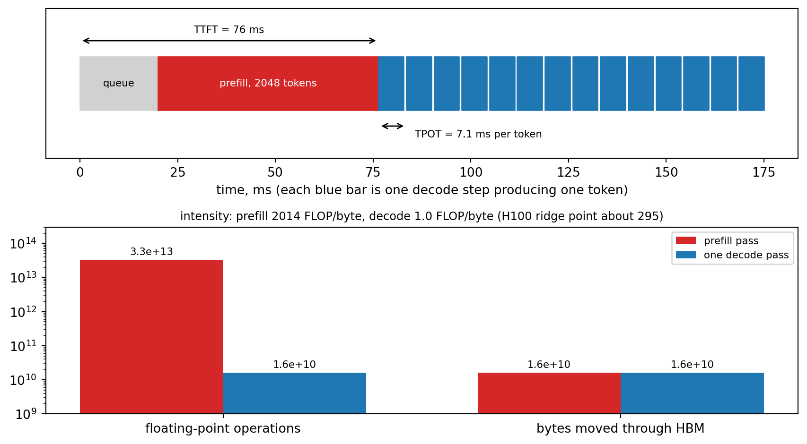
Code
pd.DataFrame({
"phase": ["prefill", "one decode step"],
"new tokens per pass": [P_DEMO, 1],
"GFLOP": [f_pf / 1e9, f_dc / 1e9],
"GB moved": [q_pf / 1e9, q_dc / 1e9],
"FLOP per byte": [f_pf / q_pf, f_dc / q_dc],
"bound by": [bound_pf, bound_dc],
"modeled ms": [1e3 * t_pf_m, 1e3 * t_dc_m],
"latency it sets": ["time to first token", "time per output token"],
}).round(2)| phase | new tokens per pass | GFLOP | GB moved | FLOP per byte | bound by | modeled ms | latency it sets | |
|---|---|---|---|---|---|---|---|---|
| 0 | prefill | 2048 | 32890.88 | 16.33 | 2014.33 | compute | 56.43 | time to first token |
| 1 | one decode step | 1 | 16.06 | 16.33 | 0.98 | memory | 7.09 | time per output token |
Prefill is a single pass that is limited by arithmetic and sets the time to first token; decode is hundreds of passes, each limited by memory, that set the reading speed. Almost every engine optimization targets one phase or the other, and the scheduling problems later in the chapter come from forcing the two to share a GPU.
253.2.7 The loop on a real model (executed)
The cell below runs this exact loop by hand on Qwen2.5-0.5B-Instruct, with no generate helper: it applies the chat template, shows the role-marker tokens, runs one prefill, then decodes one token at a time while carrying the KV cache forward, and stops on the end-of-turn token. It runs on the GPU when one is present and on the CPU otherwise.
import time
import numpy as np
import torch
from transformers import AutoModelForCausalLM, AutoTokenizer
DEVICE = "cuda" if torch.cuda.is_available() else "cpu"
DTYPE = torch.bfloat16 if DEVICE == "cuda" else torch.float32
MODEL_ID = "Qwen/Qwen2.5-0.5B-Instruct"
tok = AutoTokenizer.from_pretrained(MODEL_ID)
model = AutoModelForCausalLM.from_pretrained(MODEL_ID, dtype=DTYPE).to(DEVICE).eval()
messages = [
{"role": "system", "content": "You are a concise assistant."},
{"role": "user", "content": "In one sentence, why is LLM decoding memory bound?"},
]
prompt_text = tok.apply_chat_template(messages, tokenize=False, add_generation_prompt=True)
prompt_ids = tok(prompt_text, return_tensors="pt").input_ids.to(DEVICE)
# Show the special role-marker tokens the template inserted.
ids = prompt_ids[0].tolist()
special = {tok.convert_tokens_to_ids(t): t for t in ["<|im_start|>", "<|im_end|>"]}
print(f"device={DEVICE}, prompt length P={len(ids)} tokens")
print("role-marker positions:", [(i, special[t]) for i, t in enumerate(ids) if t in special])
print("first 12 ids:", ids[:12])C:\Users\miken\github\ai_in_action\.venv\lib\site-packages\tqdm\auto.py:21: TqdmWarning:
IProgress not found. Please update jupyter and ipywidgets. See https://ipywidgets.readthedocs.io/en/stable/user_install.html
Warning: You are sending unauthenticated requests to the HF Hub. Please set a HF_TOKEN to enable higher rate limits and faster downloads.
Loading weights: 0%| | 0/290 [00:00<?, ?it/s]Loading weights: 100%|██████████| 290/290 [00:00<00:00, 4253.04it/s]device=cuda, prompt length P=31 tokens
role-marker positions: [(0, '<|im_start|>'), (9, '<|im_end|>'), (11, '<|im_start|>'), (26, '<|im_end|>'), (28, '<|im_start|>')]
first 12 ids: [151644, 8948, 198, 2610, 525, 264, 63594, 17847, 13, 151645, 198, 151644]def sample_next(logits, rule="greedy", temperature=1.0, top_k=None, top_p=None, gen=None):
"""Turn a [V] logit vector into one token id with the standard pipeline."""
if rule == "greedy":
return int(torch.argmax(logits))
z = logits.float() / temperature
if top_k is not None:
kth = torch.topk(z, top_k).values[-1]
z = torch.where(z < kth, torch.full_like(z, -float("inf")), z)
probs = torch.softmax(z, dim=-1)
if top_p is not None:
sp, si = torch.sort(probs, descending=True)
keep = torch.cumsum(sp, 0) - sp < top_p # smallest prefix reaching top_p
mask = torch.zeros_like(probs, dtype=torch.bool)
mask[si[keep]] = True
probs = torch.where(mask, probs, torch.zeros_like(probs))
probs = probs / probs.sum()
return int(torch.multinomial(probs.cpu(), 1, generator=gen)) # CPU generator: seedable anywhere
@torch.no_grad()
def engine_loop(prompt_ids, max_new_tokens=48, **sampling):
"""Prefill once, then decode token by token with the KV cache. Returns text and timings."""
eos = tok.convert_tokens_to_ids("<|im_end|>")
sync = torch.cuda.synchronize if DEVICE == "cuda" else (lambda: None)
sync(); t0 = time.perf_counter()
out = model(input_ids=prompt_ids, use_cache=True) # PREFILL
cache, logits = out.past_key_values, out.logits[0, -1]
sync(); t_prefill = time.perf_counter() - t0
generated, step_times = [], []
for _ in range(max_new_tokens):
nxt = sample_next(logits, **sampling)
if nxt == eos:
break
generated.append(nxt)
sync(); t1 = time.perf_counter()
out = model(input_ids=torch.tensor([[nxt]], device=DEVICE),
past_key_values=cache, use_cache=True) # DECODE: one new token
cache, logits = out.past_key_values, out.logits[0, -1]
sync(); step_times.append(time.perf_counter() - t1)
return tok.decode(generated), t_prefill, step_times, cache
engine_loop(prompt_ids, max_new_tokens=4) # warm-up (kernel selection, allocator)
text_a, t_pf, steps, cache = engine_loop(prompt_ids)
text_b, *_ = engine_loop(prompt_ids)
print("greedy reply:", text_a)
print("greedy run twice identical:", text_a == text_b)
print(f"prefill of {prompt_ids.shape[1]} tokens: {1e3 * t_pf:.1f} ms;"
f" median decode step: {1e3 * np.median(steps):.1f} ms over {len(steps)} steps")
k0 = cache.layers[0].keys
print("KV cache, layer 0 keys shape [batch, kv_heads, positions, head_dim]:", tuple(k0.shape))
g = torch.Generator(device="cpu")
for rule in [dict(rule="sample", temperature=0.7, top_p=0.9), dict(rule="sample", temperature=1.3, top_k=50)]:
g.manual_seed(0)
txt, *_ = engine_loop(prompt_ids, max_new_tokens=30, gen=g, **rule)
print(rule, "->", txt)greedy reply: LLM decoding is memory-bound because the large size of the input data and the computational complexity of the decoding process make it difficult to efficiently process and store large amounts of data.
greedy run twice identical: True
prefill of 31 tokens: 99.7 ms; median decode step: 84.9 ms over 35 steps
KV cache, layer 0 keys shape [batch, kv_heads, positions, head_dim]: (1, 2, 66, 64)
{'rule': 'sample', 'temperature': 0.7, 'top_p': 0.9} -> LLM decoding requires vast amounts of memory to store and manipulate large amounts of text data, making it memory-bound.
{'rule': 'sample', 'temperature': 1.3, 'top_k': 50} -> Memory limitations in large language models may lead to slower decoding times due to inefficiencies in the algorithm used for context sampling and retrieval in deep learning models.Three things are visible in the printout. The template inserted <|im_start|> and <|im_end|> markers around each turn. The prefill over the whole prompt takes about as long as one or two decode steps even though it processes dozens of tokens, because both are dominated by fixed costs paid once per forward pass (reading the weights and, on this plain eager path, launching every kernel from Python), not by arithmetic. Section 253.6 separates those two costs. And the cache after decoding has one key row per prompt and generated position in every layer: the per-request state that the rest of this chapter is about. Greedy decoding reproduced itself exactly here because the request ran alone.
253.2.8 Sampling rules, isolated (executed)
To see the decoding rules without a model in the way, the next cell applies them to a fixed logit vector and prints the kept sets and their probabilities, then checks the temperature limits symbolically with SymPy.
import sympy as sp
z = np.array([3.2, 2.9, 2.1, 1.0, 0.4, -0.5, -1.2, -2.0])
def softmax(v, T=1.0):
e = np.exp((v - v.max()) / T)
return e / e.sum()
print(f"{'T':>5} " + " ".join(f"p{i}" .rjust(6) for i in range(len(z))))
for T in [0.1, 0.7, 1.0, 2.0, 10.0]:
print(f"{T:5.1f} " + " ".join(f"{q:6.3f}" for q in softmax(z, T)))
p = softmax(z)
order = np.argsort(-p)
top_k_set = sorted(order[:3].tolist())
cum = np.cumsum(p[order])
m = int(np.searchsorted(cum, 0.9) + 1)
top_p_set = sorted(order[:m].tolist())
print("top-k (k=3) keeps tokens", top_k_set, "mass", round(p[top_k_set].sum(), 3))
print("top-p (p=0.9) keeps tokens", top_p_set, "mass", round(p[top_p_set].sum(), 3))
# Symbolic checks: two-logit softmax with z1 > z2 tends to one-hot as T -> 0+,
# to uniform as T -> oo, and is invariant to a common shift c.
z1, z2, T, c = sp.symbols("z1 z2 T c", real=True)
p1 = sp.exp(z1 / T) / (sp.exp(z1 / T) + sp.exp(z2 / T))
p1_gap = p1.subs({z1: 1, z2: 0})
print("limit T->0+ :", sp.limit(p1_gap, T, 0, "+"))
print("limit T->oo :", sp.limit(p1_gap, T, sp.oo))
shifted = sp.exp((z1 + c) / T) / (sp.exp((z1 + c) / T) + sp.exp((z2 + c) / T))
print("shift invariant:", sp.simplify(shifted - p1) == 0) T p0 p1 p2 p3 p4 p5 p6 p7
0.1 0.953 0.047 0.000 0.000 0.000 0.000 0.000 0.000
0.7 0.519 0.338 0.108 0.022 0.009 0.003 0.001 0.000
1.0 0.437 0.324 0.145 0.048 0.027 0.011 0.005 0.002
2.0 0.298 0.256 0.172 0.099 0.073 0.047 0.033 0.022
10.0 0.157 0.153 0.141 0.126 0.119 0.109 0.101 0.094
top-k (k=3) keeps tokens [0, 1, 2] mass 0.906
top-p (p=0.9) keeps tokens [0, 1, 2] mass 0.906
limit T->0+ : 1
limit T->oo : 1/2
shift invariant: TrueAt \(T = 0.1\) the distribution is essentially one-hot on the top logit, the greedy limit; at \(T = 10\) it is nearly flat. Top-k keeps exactly three tokens by construction. Top-p happens to keep three here as well, because the top three already hold 90.6 percent of the mass, but its kept set moves with the shape of the distribution, which Figure 253.2 makes visible by sweeping the temperature. SymPy confirms the two limits and the shift invariance derived above.
Code
import matplotlib.pyplot as plt
tok_idx = np.arange(len(z))
fig, axes = plt.subplots(1, 3, figsize=(11.5, 3.5))
for T_, off in [(0.5, -0.27), (1.0, 0.0), (2.0, 0.27)]:
axes[0].bar(tok_idx + off, softmax(z, T_), width=0.27, label=f"T = {T_}")
axes[0].set(title="temperature reshapes p", xlabel="token id", ylabel="probability")
axes[0].legend(fontsize=8)
p_sorted = p[order]
axes[1].bar(np.arange(len(z)), p_sorted, color=["C1" if i < 3 else "0.82" for i in range(len(z))])
axes[1].plot(np.arange(len(z)), np.cumsum(p_sorted), "k.-", lw=1, label="cumulative mass")
axes[1].axhline(0.9, color="crimson", ls="--", lw=1, label="p = 0.9")
axes[1].set(title="T = 1, sorted by probability", xlabel="rank", ylabel="probability")
axes[1].legend(fontsize=8, loc="center right")
def nucleus_size(T_, top_p=0.9):
q = np.sort(softmax(z, T_))[::-1]
return int(min(np.searchsorted(np.cumsum(q), top_p) + 1, len(q)))
temps = np.linspace(0.2, 5, 300)
axes[2].step(temps, [nucleus_size(t) for t in temps], where="post", label="top-p, p = 0.9")
axes[2].axhline(3, color="C1", ls="--", label="top-k, k = 3")
axes[2].set(title="tokens kept against temperature", xlabel="temperature T", ylabel="tokens kept",
ylim=(0, len(z) + 0.5))
axes[2].legend(fontsize=8, loc="lower right")
plt.tight_layout()
plt.show()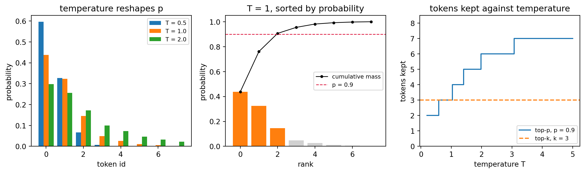
253.3 The KV Cache in Detail
253.3.1 What one token costs to remember
At every layer, attention projects each token into a key vector and a value vector for each key-value head. With grouped-query attention (Ainslie et al. 2023) a model has \(n_q\) query heads but only \(n_{kv} \le n_q\) key-value heads, each of dimension \(d_h\). Storing one key and one value per KV head, per layer, at \(b\) bytes per number gives the KV bytes per token
\[ \kappa = 2 \cdot L \cdot n_{kv} \cdot d_h \cdot b , \tag{253.2}\]
where the leading \(2\) counts the key and the value. A sequence that currently holds \(S\) tokens (prompt plus generated so far) occupies \(S\kappa\) bytes, and a batch of \(B\) such sequences occupies
\[ M_{\text{KV}}(B, S) = B \, S \, \kappa = 2 B S L n_{kv} d_h b . \tag{253.3}\]
Every factor is a lever an engineer can pull. Grouped-query and multi-query attention (Shazeer 2019) shrink \(n_{kv}\); KV-cache quantization shrinks \(b\); sliding-window attention caps \(S\); and the scheduler controls \(B\). Llama 3.1 8B has \(L = 32\), \(n_{kv} = 8\), \(d_h = 128\), so in BF16 (\(b = 2\)) \(\kappa = 2 \cdot 32 \cdot 8 \cdot 128 \cdot 2 = 131{,}072\) bytes, exactly \(128\) KiB per token. Had it used full multi-head attention with \(n_{kv} = n_q = 32\), the cache would be four times larger.
253.3.2 How the cache grows and is read
The cache has a simple lifecycle. At admission, prefill writes \(P\kappa\) bytes at once. Each decode step appends \(\kappa\) bytes per sequence. When the request finishes, all of its \(S\kappa\) bytes are freed. The less obvious fact is the read pattern: at every decode step, attention reads the entire cache of every sequence in the batch, because the new query attends to all earlier positions. The bytes moved per decode step are therefore
\[ Q_{\text{step}}(B, S) = \underbrace{bN}_{\text{weights, shared}} + \underbrace{B S \kappa}_{\text{KV, per sequence}} . \tag{253.4}\]
The first term is paid once per step regardless of \(B\); the second grows linearly with both batch size and context length. That asymmetry is the whole story of Section 253.6 and Section 253.7.
Code
import pandas as pd
MODELS = {
# name: (params N, layers L, query heads, kv heads, head dim, model width d)
"Qwen2.5-0.5B": (0.494e9, 24, 14, 2, 64, 896),
"Llama-3.1-8B": (8.03e9, 32, 32, 8, 128, 4096),
"Llama-3.1-70B": (70.6e9, 80, 64, 8, 128, 8192),
"Llama-3.1-405B": (405.9e9, 126, 128, 8, 128, 16384),
}
def kv_bytes_per_token(L, n_kv, d_h, b=2):
return 2 * L * n_kv * d_h * b
rows = []
for name, (N, L, nq, nkv, dh, d) in MODELS.items():
k = kv_bytes_per_token(L, nkv, dh)
k_mha = kv_bytes_per_token(L, nq, dh)
rows.append({"model": name, "weights GB (bf16)": 2 * N / 1e9,
"KV KiB/token": k / 1024, "KV GiB per 8K seq": 8192 * k / 2**30,
"same with full MHA, GiB": 8192 * k_mha / 2**30})
pd.DataFrame(rows).round(2)| model | weights GB (bf16) | KV KiB/token | KV GiB per 8K seq | same with full MHA, GiB | |
|---|---|---|---|---|---|
| 0 | Qwen2.5-0.5B | 0.99 | 12.0 | 0.09 | 0.66 |
| 1 | Llama-3.1-8B | 16.06 | 128.0 | 1.00 | 4.00 |
| 2 | Llama-3.1-70B | 141.20 | 320.0 | 2.50 | 20.00 |
| 3 | Llama-3.1-405B | 811.80 | 504.0 | 3.94 | 63.00 |
The 405B model needs about 4 GiB of cache for a single 8K-token conversation, and an 8B model needs 1 GiB. Multiply by the number of concurrent users and the cache, not the weights, becomes the dominant tenant of GPU memory.
Code
ctx_grid = np.logspace(10, 17, 60, base=2)
fig, axes = plt.subplots(1, 2, figsize=(10.5, 3.9))
for name, (Nm, Lm, nqm, nkvm, dhm, dm) in MODELS.items():
axes[0].loglog(ctx_grid, ctx_grid * kv_bytes_per_token(Lm, nkvm, dhm) / 2**30, label=name)
axes[0].axhline(80e9 / 2**30, color="k", ls="--", lw=1)
axes[0].text(ctx_grid[0], 80e9 / 2**30 / 1.8, "one 80 GB GPU", fontsize=8)
axes[0].set(xlabel="context length S, tokens", ylabel="KV cache of one sequence, GiB")
axes[0].legend(fontsize=8, loc="lower right"); axes[0].grid(alpha=0.3, which="both")
N8_, L8_, _, nkv8_, dh8_, _ = MODELS["Llama-3.1-8B"]
kap_8b = kv_bytes_per_token(L8_, nkv8_, dh8_)
Bk = np.arange(1, 257)
w_gb = 2 * N8_ / 1e9
kv_gb = Bk * 2048 * kap_8b / 1e9
axes[1].stackplot(Bk, np.full(Bk.shape, w_gb), kv_gb, labels=["weights (shared by all users)", "KV cache (one per user)"],
colors=["C0", "C1"], alpha=0.85)
b_eq = int(np.ceil(w_gb / (2048 * kap_8b / 1e9)))
axes[1].axvline(b_eq, color="k", ls=":", lw=1)
axes[1].text(b_eq + 5, 3 * w_gb, f"cache = weights\nat B = {b_eq}", fontsize=8)
axes[1].set(xlabel="users in the batch B", ylabel="GB read per decode step", xlim=(1, 256))
axes[1].legend(fontsize=8, loc="upper left"); axes[1].grid(alpha=0.3)
plt.tight_layout()
plt.show()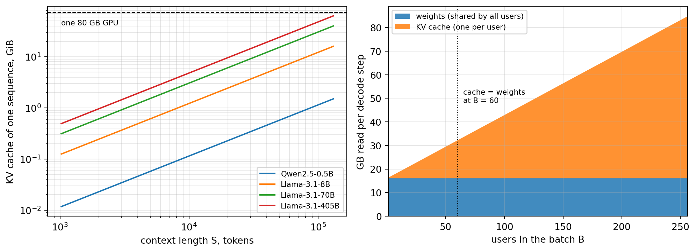
253.3.3 Fragmentation, reservation, and paging
Because the output length is unknown, an engine cannot know how much cache a request will eventually need. Early systems, including Orca (Section 253.9.4), reserved a contiguous region sized for the worst case, max_tokens slots, at admission. Three kinds of waste follow: reserved but never used slots when the reply ends early (internal waste), slots reserved for tokens not yet generated (reservation waste, recovered only at the end), and gaps between differently sized regions that no new request fits (external fragmentation). Kwon et al. (2023) measured that in such systems only about 20 to 38 percent of KV memory holds actual token state.
PagedAttention, introduced with vLLM (Kwon et al. 2023), borrows virtual memory from operating systems. The cache is cut into fixed-size blocks of \(s\) tokens (16 by default); each sequence has a block table mapping its logical blocks to arbitrary physical blocks; the attention kernel follows the table. A sequence allocates a new block only when its last one fills, so its waste is at most \(s - 1\) tokens, and there is no external fragmentation because all blocks are the same size. Blocks can also be shared copy-on-write between sequences with a common prefix, the system prompt being the canonical case. SGLang’s RadixAttention (Zheng et al. 2024) generalizes sharing by keeping finished requests’ blocks in a radix tree keyed by token prefix and reusing any matching prefix for later requests. The simulator in Section 253.9.7 measures how much admission capacity paging buys over reservation.
253.4 Where the Cache Lives: The GPU Memory Hierarchy
253.4.1 Compute cores, HBM, and the pipe between them
On paper a rented GPU has two parts. Compute cores (streaming multiprocessors with tensor cores) do arithmetic. High bandwidth memory (HBM), stacked DRAM beside the die, holds the data. Between them is a pipe of fixed width, the memory bandwidth \(\beta\). Everything the cores touch (every weight, every cached key and value, every activation) must come up that pipe from HBM, through the on-chip L2 cache and the small, very fast on-chip SRAM (shared memory and registers), before the cores can use it. Kernels such as FlashAttention (Dao et al. 2022) are designed around this hierarchy, keeping tiles in SRAM so that each byte crosses the HBM pipe once. A step of computation therefore takes at least as long as moving its bytes through the pipe and at least as long as doing its arithmetic on the cores, whichever is slower:
\[ T_{\text{step}} \;\ge\; \max\!\left(\frac{Q}{\beta},\; \frac{W}{\pi}\right), \tag{253.5}\]
where \(Q\) is bytes moved, \(W\) is floating-point work, and \(\pi\) is peak arithmetic throughput. An operation whose \(Q/\beta\) term dominates is memory bound: the cores finish their arithmetic early and wait for data. In a single-user decode step the cores wait for most of the step.
Beyond the GPU sit slower and larger tiers. Other GPUs in the same server are reachable over NVLink; host CPU memory over PCIe; local disk beyond that. Engines use them deliberately: tensor parallelism splits weights across GPUs over NVLink, and KV offloading parks idle caches in CPU memory.
flowchart TB
R["Registers and shared memory SRAM, tens of MB total, fastest"] --> L2["L2 cache, about 50 MB"]
L2 --> HBM["HBM, 80 GB at about 3.35 TB per s: weights, KV cache, activations"]
HBM --> NV["Other GPUs over NVLink, about 900 GB per s"]
HBM --> PCIE["Host CPU memory over PCIe, about 64 GB per s"]
PCIE --> DISK["NVMe disk, a few GB per s"]
CORES["Tensor cores and CUDA cores"] --- R
The numbers below are spec-sheet values for one H100 SXM, used as the reference machine throughout the chapter. Bandwidth falls by roughly an order of magnitude at each step down the hierarchy, which is why moving data off the GPU is reserved for data that is not needed on the next step.
| Tier | Capacity (H100 SXM) | Bandwidth to the cores | What an engine keeps there |
|---|---|---|---|
| Registers and shared memory (SRAM) | about 33 MB total | tens of TB/s | tiles of the current matrix multiply or attention block |
| L2 cache | 50 MB | several TB/s | recently used tiles, small hot tensors |
| HBM3 | 80 GB | 3.35 TB/s | weights, KV cache, activations and workspace |
| Peer GPUs via NVLink 4 | 80 GB each | 900 GB/s total per GPU | weight shards (tensor parallel), remote KV |
| Host DRAM via PCIe Gen5 x16 | hundreds of GB to TB | about 64 GB/s per direction | swapped or offloaded KV, prefix cache |
| NVMe storage | TB | a few GB/s | model files, cold KV cache tiers |
Code
import matplotlib.pyplot as plt
tiers = [("SRAM: registers, shared memory", 33e6, 30e12), ("L2 cache", 50e6, 7e12), ("HBM3", 80e9, 3.35e12),
("7 peer GPUs over NVLink", 7 * 80e9, 0.9e12), ("host DRAM over PCIe", 1e12, 64e9), ("NVMe disk", 8e12, 7e9)]
fig, ax = plt.subplots(figsize=(7.6, 4.3))
ax.plot([t[1] for t in tiers], [t[2] for t in tiers], color="0.7", lw=1, zorder=0)
for k, (name, cap, bw) in enumerate(tiers):
ax.scatter(cap, bw, s=70, color=f"C{k}", zorder=2)
ax.annotate(name, (cap, bw), textcoords="offset points", xytext=(9, 3), fontsize=8)
ax.set_xscale("log"); ax.set_yscale("log")
ax.set(xlabel="capacity, bytes", ylabel="bandwidth to the compute cores, bytes per second",
xlim=(1e7, 3e14), ylim=(3e9, 1e14))
ax.grid(alpha=0.3, which="both")
plt.tight_layout()
plt.show()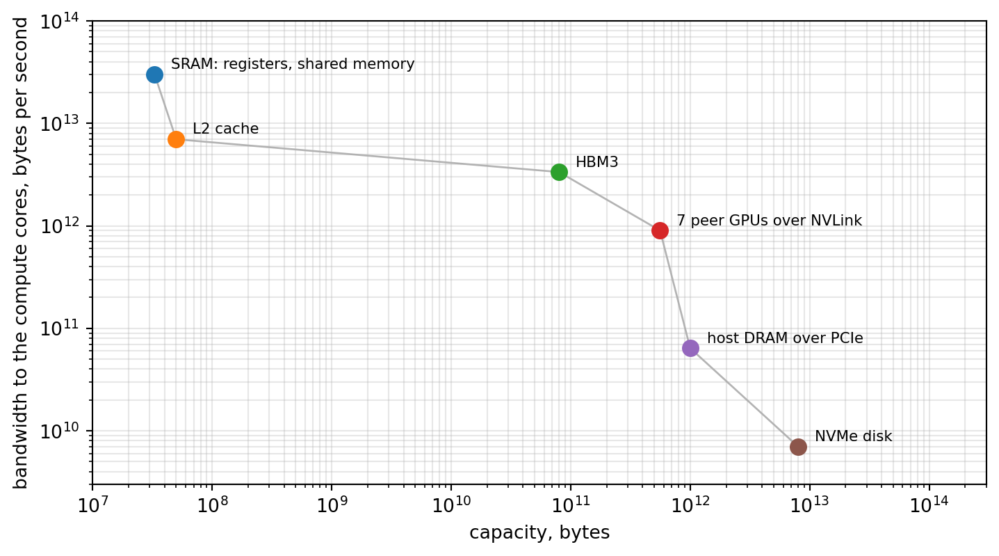
253.4.2 What fills HBM
An engine at startup measures free HBM and divides it among three tenants:
\[ \underbrace{u \cdot M_{\text{HBM}}}_{\text{usable}} = \underbrace{bN}_{\text{weights}} + \underbrace{M_{\text{act}}}_{\text{activations, workspace}} + \underbrace{M_{\text{KV}}}_{\text{cache pool}} , \tag{253.6}\]
where \(u\) is the utilization target (vLLM’s gpu_memory_utilization, typically \(0.9\)). Weights are fixed by the model and precision. Activations are the working numbers of one step, transient and reused each step, sized by the largest number of tokens a step may process. Everything left over becomes the KV pool, carved into blocks. Since the pool divided by the per-sequence footprint caps the number of concurrent users, the HBM budget is a capacity plan for users:
\[ B_{\text{KV}} = \left\lfloor \frac{u M_{\text{HBM}} - bN - M_{\text{act}}}{S \kappa} \right\rfloor . \tag{253.7}\]
Code
M_HBM, U, M_ACT = 80e9, 0.90, 3e9
rows = []
for name in ["Qwen2.5-0.5B", "Llama-3.1-8B"]:
N, L, nq, nkv, dh, d = MODELS[name]
kappa = kv_bytes_per_token(L, nkv, dh)
pool = U * M_HBM - 2 * N - M_ACT
for S in [1024, 4096, 16384, 131072]:
rows.append({"model": name, "weights GB": 2 * N / 1e9, "KV pool GB": pool / 1e9,
"context S": S, "max concurrent seqs": int(pool // (S * kappa))})
# 141 GB of 70B weights do not fit the usable part of two 80 GB GPUs; show 4-way tensor parallelism.
N, L, nq, nkv, dh, d = MODELS["Llama-3.1-70B"]
kappa = kv_bytes_per_token(L, nkv, dh)
pool = 4 * (U * M_HBM - M_ACT) - 2 * N
for S in [1024, 4096, 16384, 131072]:
rows.append({"model": "Llama-3.1-70B (4 GPUs)", "weights GB": 2 * N / 1e9, "KV pool GB": pool / 1e9,
"context S": S, "max concurrent seqs": int(pool // (S * kappa))})
pd.DataFrame(rows).round(1)| model | weights GB | KV pool GB | context S | max concurrent seqs | |
|---|---|---|---|---|---|
| 0 | Qwen2.5-0.5B | 1.0 | 68.0 | 1024 | 5405 |
| 1 | Qwen2.5-0.5B | 1.0 | 68.0 | 4096 | 1351 |
| 2 | Qwen2.5-0.5B | 1.0 | 68.0 | 16384 | 337 |
| 3 | Qwen2.5-0.5B | 1.0 | 68.0 | 131072 | 42 |
| 4 | Llama-3.1-8B | 16.1 | 52.9 | 1024 | 394 |
| 5 | Llama-3.1-8B | 16.1 | 52.9 | 4096 | 98 |
| 6 | Llama-3.1-8B | 16.1 | 52.9 | 16384 | 24 |
| 7 | Llama-3.1-8B | 16.1 | 52.9 | 131072 | 3 |
| 8 | Llama-3.1-70B (4 GPUs) | 141.2 | 134.8 | 1024 | 401 |
| 9 | Llama-3.1-70B (4 GPUs) | 141.2 | 134.8 | 4096 | 100 |
| 10 | Llama-3.1-70B (4 GPUs) | 141.2 | 134.8 | 16384 | 25 |
| 11 | Llama-3.1-70B (4 GPUs) | 141.2 | 134.8 | 131072 | 3 |
An 8B model on one 80 GB GPU can hold about a hundred concurrent 4K-token conversations (nearly four hundred at 1K) but only three at 128K tokens, and a 70B model spread over four GPUs fares about the same, because its cache per token is two and a half times larger. Long context is not mainly a compute problem; it is a memory capacity problem, which is why the KV cache is the currency every scheduler spends.
Code
budget_rows = [("Qwen2.5-0.5B, 1 GPU", "Qwen2.5-0.5B", 1), ("Llama-3.1-8B, 1 GPU", "Llama-3.1-8B", 1),
("Llama-3.1-70B, 1 of 4 GPUs", "Llama-3.1-70B", 4)]
fig, ax = plt.subplots(figsize=(9, 2.9))
for y, (label, key, gpus) in enumerate(budget_rows):
Nm, Lm, _, nkvm, dhm, _ = MODELS[key]
w = 2 * Nm / gpus / 1e9
act = M_ACT / 1e9
head = (1 - U) * M_HBM / 1e9
kvp = U * M_HBM / 1e9 - w - act
users = int(gpus * kvp * 1e9 // (4096 * kv_bytes_per_token(Lm, nkvm, dhm)))
left = 0.0
for val, col, seg in [(w, "C0", "weights"), (act, "C2", "activations"), (kvp, "C1", "KV pool"), (head, "0.85", "headroom")]:
ax.barh(y, val, left=left, color=col, edgecolor="white", label=seg if y == 0 else None)
if val > 6:
ax.text(left + val / 2, y, f"{seg}\n{val:.0f} GB", ha="center", va="center", fontsize=7,
color="white" if col != "0.85" else "black")
left += val
ax.text(81, y, f"{users} users\nat 4K", va="center", fontsize=8)
ax.set_yticks(range(len(budget_rows)), [r[0] for r in budget_rows])
ax.set(xlim=(0, 92), xlabel="GB of one 80 GB GPU")
ax.invert_yaxis()
ax.legend(fontsize=7, ncol=4, loc="lower center", bbox_to_anchor=(0.45, 1.0), frameon=False)
plt.tight_layout()
plt.show()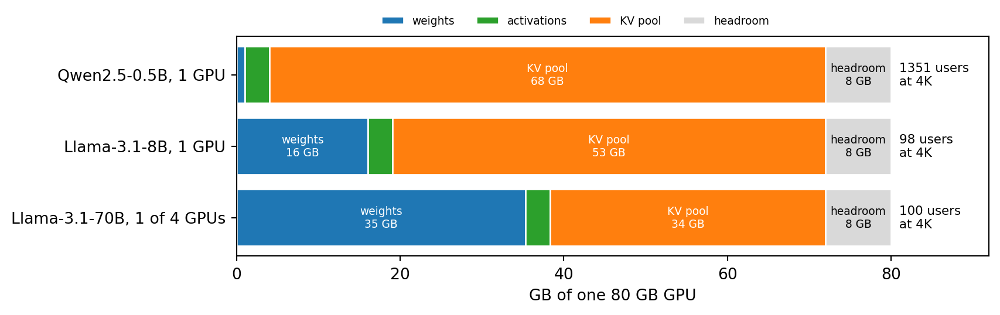
253.5 The Roofline Model
253.5.1 The paper: Williams, Waterman, and Patterson (2009)
Williams, Waterman, and Patterson (2009) set out to give programmers and architects a single, visual, “bound and bottleneck” model of performance for the multicore processors that had just become mainstream. Its central quantity is operational intensity: the floating-point operations a kernel performs per byte of traffic between the caches and main memory (DRAM). The authors chose “operational” rather than “arithmetic” deliberately: the denominator is the traffic that actually reaches DRAM after the cache hierarchy has filtered it, not the bytes the program nominally touches. For a kernel with intensity \(I\) on a machine with peak throughput \(\pi\) and peak memory bandwidth \(\beta\), the model states
\[ \text{Attainable FLOP/s} = \min\!\big(\pi,\; \beta \cdot I\big). \tag{253.8}\]
On log-log axes of attainable performance against intensity, this draws a roof: a slanted line of slope one (\(\beta I\), the memory ceiling) that meets a flat line (\(\pi\), the compute ceiling) at the ridge point
\[ I^\ast = \frac{\pi}{\beta}\quad \text{FLOP per byte}. \tag{253.9}\]
The derivation is one line. In time \(t\) the kernel can do at most \(\pi t\) operations, and it can move at most \(\beta t\) bytes, which supports at most \(I \beta t\) operations. Both limits hold, so performance is at most the smaller. The ridge point’s horizontal position is the paper’s measure of how hard a machine is to program well: it is the minimum intensity a kernel needs to have any hope of reaching peak, and a ridge far to the right means most kernels will be memory bound.
The paper goes beyond the two-line roof. It adds ceilings below the roof that a given kernel hits unless it is optimized: computational ceilings for missing instruction-level parallelism, missing SIMD, or an imbalance between floating-point multiplies and adds, and bandwidth ceilings for missing unit-stride access, poor memory affinity on NUMA systems, or missing software prefetching. The position of a kernel tells the programmer which optimizations can possibly help: left of the ridge, only reducing traffic or improving bandwidth use helps; right of it, only better use of the arithmetic units does. The authors also point out that intensity is not fixed by the algorithm alone: capacity and conflict cache misses add traffic beyond the compulsory minimum and push a kernel left, so restructuring a computation for locality can move it toward the ridge. They validated the model on four very different multicore machines of the day (an Intel Xeon, an AMD Opteron, a Sun UltraSPARC T2+, and an IBM Cell blade) with four kernels (sparse matrix-vector multiply, a lattice Boltzmann magnetohydrodynamics code, a stencil, and a 3-D FFT), showing that the roof and ceilings bounded the measured performance and explained which optimizations paid off on which machine.
Table 253.4 summarizes the ceilings and pairs each with its counterpart in LLM serving, and Figure 253.6 draws them on a schematic machine.
| Ceiling | Kind | What puts a kernel under it | What lifts it | Counterpart in LLM serving |
|---|---|---|---|---|
| Peak floating-point throughput | compute roof | the hardware | nothing; it is the roof | tensor-core peak at a given precision (FP8 roughly doubles the BF16 roof) |
| Floating-point balance | compute ceiling | unequal numbers of multiplies and adds on hardware that peaks only with paired multiply-adds | restructure the arithmetic, fused multiply-add | matrix multiplies are balanced; elementwise and normalization kernels are not |
| SIMD | compute ceiling | scalar code on vector hardware | vectorize | code that misses the tensor cores runs under the much lower CUDA-core ceiling |
| Instruction-level parallelism | compute ceiling | chains of dependent instructions stall the pipelines | unroll, interleave independent work | small decode kernels with too few thread blocks to fill every streaming multiprocessor |
| Peak memory bandwidth | memory roof | the hardware | nothing; it is the roof | HBM bandwidth |
| Unit-stride access and prefetching | memory ceiling | irregular or strided accesses defeat the prefetchers | reorganize data, software prefetch | gathering paged KV blocks; block sizes chosen so reads stay coalesced |
| Memory affinity | memory ceiling | on multi-socket machines, threads read memory attached to the other socket | allocate data next to the thread that uses it | reading over NVLink or PCIe instead of local HBM |
| Capacity and conflict misses | lowers intensity (moves the kernel left) | cache misses add traffic beyond the compulsory minimum | blocking, padding, cache-aware layouts | naive attention writes its score matrix to HBM; FlashAttention tiles it in SRAM |
Code
import matplotlib.pyplot as plt
PI0, BW0 = 1e12, 100e9
Ig = np.logspace(-2, 3, 400)
fig, ax = plt.subplots(figsize=(7.6, 4.5))
ax.loglog(Ig, np.minimum(PI0, BW0 * Ig) / 1e9, color="black", lw=2.4, label="roof: min(peak, bandwidth x intensity)")
for frac, lab in [(0.5, "without instruction-level parallelism"), (0.125, "without SIMD as well")]:
I_meet = PI0 * frac / BW0
xs = Ig[Ig >= I_meet]
ax.loglog(xs, np.full(xs.shape, PI0 * frac / 1e9), "--", color="C0", lw=1.2)
ax.text(xs[-1], PI0 * frac / 1e9 * 1.08, lab, ha="right", fontsize=8, color="C0")
for frac, lab, ls in [(0.5, "memory ceiling: without prefetching", "--"),
(0.25, "memory ceiling: without memory affinity as well", ":")]:
xs = Ig[BW0 * frac * Ig <= PI0 * 0.125]
ax.loglog(xs, BW0 * frac * xs / 1e9, ls, color="C3", lw=1.4, label=lab)
ridge = PI0 / BW0
ax.axvline(ridge, color="0.6", ls=":", lw=1)
ax.text(ridge * 1.08, 1.3, f"ridge point\n{ridge:.0f} FLOP/byte", fontsize=8, color="0.3")
for I_k, lab in [(0.5, "kernel A"), (60, "kernel B")]:
ax.axvline(I_k, color="C2", lw=1, alpha=0.6)
ax.text(I_k * 1.08, 0.5, lab, fontsize=8, color="C2")
ax.set(xlabel="operational intensity, FLOP per byte of DRAM traffic", ylabel="attainable GFLOP/s", ylim=(0.3, 2000))
ax.legend(fontsize=8, loc="upper left")
ax.grid(alpha=0.3, which="both")
plt.tight_layout()
plt.show()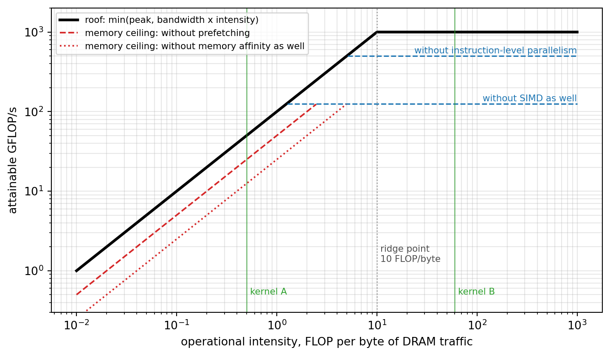
Three of its ideas carry over to LLM inference unchanged, and Pope et al. (2023) built their analysis of large-scale transformer inference on exactly this accounting of FLOPs against bytes. Intensity is a property of the kernel and its data movement, so batching, which changes data movement, changes intensity. The ridge point of a modern GPU is far to the right (about \(295\) FLOP per byte for the H100 in BF16), so most inference work is memory bound by default. And the model is a bound, not a prediction: real kernels sit below their ceilings, and the gap is where engineering lives.
253.5.2 The intensity of a decode step
Apply Equation 253.8 to one decode step of a batch of \(B\) sequences, each with \(S\) cached tokens. Counting the dominant terms, the work is the weight matrix multiplies, \(2N\) per sequence, plus attention, about \(4 L d S\) per sequence (a dot product with each of \(S\) keys and a weighted sum of \(S\) values, \(2 d S\) each, per layer). The bytes are Equation 253.4. So
\[ I(B, S) = \frac{W}{Q} = \frac{B\,(2N + 4LdS)}{bN + BS\kappa} . \tag{253.10}\]
Take the limits. For a single short sequence, \(B = 1\) and \(S\kappa \ll bN\), so \(I \approx 2N / (bN) = 2/b\), which is \(1\) FLOP per byte in BF16, about three hundred times below the H100 ridge. That is the precise sense in which one user leaves the GPU idle: the step runs at roughly \(1/295\) of peak arithmetic. Ignoring the cache term, intensity grows linearly, \(I \approx 2B/b\), and reaches the ridge at
\[ B^\ast_{\text{weights}} = \frac{b\, I^\ast}{2} = \frac{b \pi}{2 \beta}, \]
about \(295\) sequences for BF16 on an H100. But the cache term does not stay small. As \(B \to \infty\),
\[ \lim_{B \to \infty} I(B, S) = \frac{2N + 4LdS}{S\kappa} \approx \frac{2N}{S \kappa}, \tag{253.11}\]
a ceiling that falls as context grows. If this ceiling is below \(I^\ast\), decode never becomes compute bound at that context length, no matter how many users you batch, because each added user brings its own cache to read. Solving \(Q/\beta = W/\pi\) with the attention FLOP dropped gives the crossover batch
\[ B^\ast(S) = \frac{bN\pi}{2N\beta - S\kappa\pi}, \tag{253.12}\]
which exists (is positive) only when \(2N/(S\kappa) > \pi/\beta = I^\ast\), matching the limit argument. For Llama 3.1 8B in BF16, \(2N/\kappa \approx 1.2 \times 10^5\), so the condition holds only for \(S \lesssim 415\) tokens. At typical chat lengths of thousands of tokens, decoding stays memory bound at every batch size; batching still multiplies throughput, as the next section shows, but the bytes being amortized gradually shift from weights (shared) to cache (not shared). This is the deepest reason grouped-query attention, KV quantization, and multi-head latent attention matter for serving.
# SymPy: derive the crossover batch from Q/beta = W/pi and confirm the existence condition.
B, N_, b_, S_, k_, pi_, beta_ = sp.symbols("B N b S kappa pi beta", positive=True)
mem_time = (b_ * N_ + B * S_ * k_) / beta_
cmp_time = 2 * N_ * B / pi_
B_star = sp.solve(sp.Eq(mem_time, cmp_time), B)[0]
print("B* =", sp.simplify(B_star))
print("matches closed form:", sp.simplify(B_star - b_ * N_ * pi_ / (2 * N_ * beta_ - S_ * k_ * pi_)) == 0)
I_expr = 2 * N_ * B / (b_ * N_ + B * S_ * k_)
print("intensity ceiling as B -> oo:", sp.limit(I_expr, B, sp.oo))
H100 = dict(pi=989e12, beta=3.35e12, hbm=80e9)
N8, L8, _, nkv8, dh8, d8 = MODELS["Llama-3.1-8B"]
kap8 = kv_bytes_per_token(L8, nkv8, dh8)
I_star = H100["pi"] / H100["beta"]
print(f"H100 ridge point I* = {I_star:.0f} FLOP/byte; B*_weights = {I_star:.0f} (bf16)")
print(f"max context with a compute-bound regime: S < {2 * N8 / (kap8 * I_star):.0f} tokens")
for S in [128, 256, 400, 1024, 4096]:
val = 2 * N8 * H100["pi"] / (2 * N8 * H100["beta"] - S * kap8 * H100["pi"])
print(f" S={S:5d}: B* = {val:8.0f}" if val > 0 else f" S={S:5d}: no crossover, memory bound at every B")B* = N*b*pi/(2*N*beta - S*kappa*pi)
matches closed form: True
intensity ceiling as B -> oo: 2*N/(S*kappa)
H100 ridge point I* = 295 FLOP/byte; B*_weights = 295 (bf16)
max context with a compute-bound regime: S < 415 tokens
S= 128: B* = 427
S= 256: B* = 770
S= 400: B* = 8150
S= 1024: no crossover, memory bound at every B
S= 4096: no crossover, memory bound at every BCode
import matplotlib.pyplot as plt
def decode_point(Bs, S, N=N8, L=L8, d=d8, kappa=kap8, b=2):
W = Bs * (2 * N + 4 * L * d * S)
Q = b * N + Bs * S * kappa
return W / Q
I_grid = np.logspace(-0.5, 4, 300)
roof = np.minimum(H100["pi"], H100["beta"] * I_grid)
fig, ax = plt.subplots(figsize=(7.4, 4.6))
ax.loglog(I_grid, roof / 1e12, color="black", lw=2, label="roofline (H100, BF16)")
ax.axvline(I_star, color="0.6", ls=":", lw=1)
ax.text(I_star / 1.15, 1.5, f"ridge I* = {I_star:.0f}", fontsize=8, color="0.3", ha="right")
Bs = np.array([1, 4, 16, 64, 256, 1024])
for S, mk in [(256, "o"), (4096, "s")]:
I_pts = decode_point(Bs, S)
perf = np.minimum(H100["pi"], H100["beta"] * I_pts)
ax.loglog(I_pts, perf / 1e12, mk + "-", label=f"decode, context {S}")
offset = (4, -11) if S == 256 else (-6, 7) # short context labels below, long above
for Bv, x, y in zip(Bs, I_pts, perf):
if S == 4096 and Bv in (1, 256):
continue # these coincide with neighbouring labels
ax.annotate(f"B={Bv}", (x, y / 1e12), textcoords="offset points", xytext=offset, fontsize=7,
ha="left" if S == 256 else "right")
I_pf = (2 * N8 * 2048) / (2 * N8 + 2048 * kap8) # prefill of 2048 tokens, one sequence
ax.loglog([I_pf], [min(H100["pi"], H100["beta"] * I_pf) / 1e12], "*", ms=14, color="crimson",
label="prefill, 2048 tokens")
ax.set_xlabel("operational intensity (FLOP per byte of HBM traffic)")
ax.set_ylabel("attainable TFLOP/s")
ax.set_title("Decode is memory bound until the batch is large and the context short")
ax.legend(fontsize=8, loc="lower right")
ax.grid(alpha=0.3, which="both")
plt.tight_layout()
plt.show()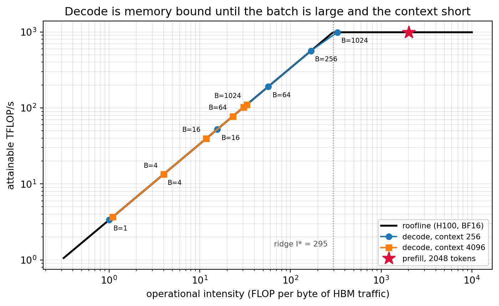
253.6 Step Time, Tokens per Second, and Users per Batch
253.6.1 A step-time model
Turn the bound into a working model. One decode step for \(B\) sequences of context \(S\) takes
\[ T(B, S) = \max\!\left(\frac{bN + BS\kappa}{\eta_m \beta},\; \frac{B(2N + 4LdS)}{\eta_c \pi}\right) + T_{\text{ovh}}(B), \tag{253.13}\]
where \(\eta_m\) and \(\eta_c\) are the fractions of peak bandwidth and arithmetic that real kernels achieve (we use \(0.8\) and \(0.6\)) and \(T_{\text{ovh}}(B) = t_0 + t_1 B\) is overhead outside the GPU kernels: the scheduler deciding the batch, building metadata, launching kernels, sampling, and detokenizing, with a fixed part \(t_0\) and a per-sequence part \(t_1\). Three quantities follow:
\[ \text{aggregate throughput} = \frac{B}{T(B,S)} \ \text{tok/s}, \qquad \text{per-user speed} = \frac{1}{T(B,S)} \ \text{tok/s}, \qquad \text{TPOT} = T(B,S). \tag{253.14}\]
In the memory-bound regime with small \(B\) and short \(S\), \(T \approx bN/(\eta_m\beta)\) is nearly constant in \(B\), so aggregate throughput grows almost linearly with \(B\) while each user’s speed barely falls. That is the free lunch. Once the cache term or the compute term takes over, \(T\) grows linearly in \(B\), aggregate throughput flattens toward a ceiling, and each user’s speed falls like \(1/B\). The serving operator’s job is to pick \(B\) on that curve.
Code
ETA_M, ETA_C, T0, T1 = 0.8, 0.6, 1.0e-3, 5e-6
def step_time(Bv, S, N=N8, L=L8, d=d8, kappa=kap8, b=2, hw=H100):
Bv = np.asarray(Bv, dtype=float)
t_mem = (b * N + Bv * S * kappa) / (ETA_M * hw["beta"])
t_cmp = Bv * (2 * N + 4 * L * d * S) / (ETA_C * hw["pi"])
return np.maximum(t_mem, t_cmp) + T0 + T1 * Bv, t_mem, t_cmp
def kv_cap(S, N=N8, kappa=kap8, b=2):
return int((U * H100["hbm"] - b * N - M_ACT) // (S * kappa))
B_grid = np.unique(np.logspace(0, 10, 200, base=2).astype(int))
fig, axes = plt.subplots(1, 3, figsize=(11, 3.6))
for S, col in [(512, "C0"), (2048, "C1"), (8192, "C2")]:
T_, _, _ = step_time(B_grid, S)
cap = kv_cap(S)
ok = B_grid <= cap
axes[0].plot(B_grid[ok], 1e3 * T_[ok], color=col, label=f"S={S}")
axes[1].plot(B_grid[ok], B_grid[ok] / T_[ok], color=col)
axes[2].plot(B_grid[ok], 1 / T_[ok], color=col)
for a in axes:
a.axvline(cap, color=col, ls="--", lw=0.8)
for a, yl in zip(axes, ["step time, ms", "aggregate tok/s", "tok/s per user"]):
a.set_xscale("log", base=2); a.set_xlabel("users in the batch B"); a.set_ylabel(yl); a.grid(alpha=0.3)
axes[0].legend(fontsize=8)
plt.tight_layout()
plt.show()
rows = []
for Bv in [1, 8, 32, 64, 128, 256]:
T_, tm, tc = step_time(Bv, 2048)
rows.append({"B": Bv, "fits (S=2048)": Bv <= kv_cap(2048), "step ms": 1e3 * float(T_),
"mem ms": 1e3 * float(tm), "compute ms": 1e3 * float(tc),
"aggregate tok/s": Bv / float(T_), "per-user tok/s": 1 / float(T_),
"tensor-core busy %": 100 * float(tc) / float(T_)})
pd.DataFrame(rows).round(1)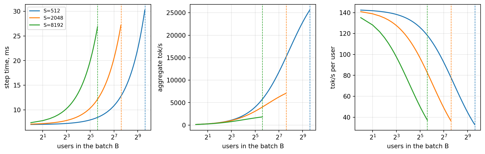
| B | fits (S=2048) | step ms | mem ms | compute ms | aggregate tok/s | per-user tok/s | tensor-core busy % | |
|---|---|---|---|---|---|---|---|---|
| 0 | 1 | True | 7.1 | 6.1 | 0.0 | 140.9 | 140.9 | 0.4 |
| 1 | 8 | True | 7.8 | 6.8 | 0.2 | 1021.2 | 127.7 | 2.9 |
| 2 | 32 | True | 10.4 | 9.2 | 0.9 | 3089.5 | 96.5 | 8.9 |
| 3 | 64 | True | 13.7 | 12.4 | 1.8 | 4663.7 | 72.9 | 13.5 |
| 4 | 128 | True | 20.5 | 18.8 | 3.7 | 6258.1 | 48.9 | 18.1 |
| 5 | 256 | False | 33.9 | 31.6 | 7.4 | 7548.5 | 29.5 | 21.8 |
The table quantifies the opening claim. At \(B = 1\) the step is about 7 ms, so one user gets roughly 140 tokens per second, and the tensor cores are busy for under one percent of the step. At \(B = 64\) with 2K-token contexts each user still gets about 70 tokens per second while the GPU produces more than thirty times the single-user throughput. The cost of batching shows up first not as compute saturation but as the cache term, which by \(B = 64\) already moves more bytes per step than the weights do; even at \(B = 256\) the tensor cores are busy for barely a fifth of the step.
Figure 253.9 opens up the step to show which term is responsible.
Code
fig, axes = plt.subplots(1, 2, figsize=(10.5, 3.9))
for ax, S, Bmax in [(axes[0], 2048, kv_cap(2048)), (axes[1], 256, 1024)]:
Bg = np.arange(1, Bmax + 1)
ovh = 1e3 * (T0 + T1 * Bg)
w_ms = np.full(Bg.shape, 1e3 * 2 * N8 / (ETA_M * H100["beta"]))
kv_ms = 1e3 * Bg * S * kap8 / (ETA_M * H100["beta"])
cmp_ms = 1e3 * Bg * (2 * N8 + 4 * L8 * d8 * S) / (ETA_C * H100["pi"])
ax.stackplot(Bg, ovh, w_ms, kv_ms, labels=["overhead", "weight reads", "KV reads"],
colors=["0.75", "C0", "C1"], alpha=0.85)
ax.plot(Bg, cmp_ms + ovh, "k--", lw=1.4, label="compute path + overhead")
ax.set(title=f"context S = {S} tokens", xlabel="users in the batch B", ylabel="ms per decode step", xlim=(1, Bmax))
ax.legend(fontsize=8, loc="upper left"); ax.grid(alpha=0.3)
plt.tight_layout()
plt.show()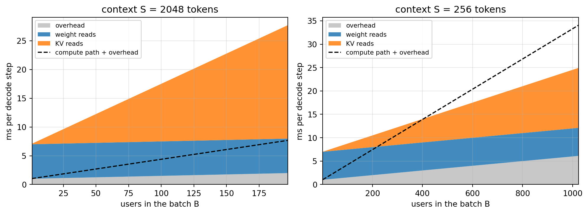
253.6.2 Measured on a real GPU (executed)
The model above is a bound plus assumptions. The next cell measures the real thing on the local GPU with the 0.5B model. For each batch size \(B\) from 1 to 256 it prefills \(B\) sequences of 512 tokens into a preallocated (static) KV cache, then times one decode step for the whole batch in two ways: the plain eager PyTorch path, where Python launches every kernel one by one, and a CUDA graph, where the whole step’s kernel launches are recorded once and replayed with a single call. Production engines use the second.
Code
from transformers import StaticCache
@torch.no_grad()
def measure_decode_step(Bv, ctx=512, reps=25):
"""Return (eager seconds, CUDA-graph seconds or nan) for one decode step of a batch of Bv."""
# Headroom: this StaticCache advances its write position on every call, graph replays included.
cache = StaticCache(config=model.config, max_cache_len=ctx + 128)
ids = torch.randint(100, 20000, (Bv, ctx), device=DEVICE)
for c0 in range(0, ctx, 128): # chunked prefill keeps peak memory bounded
pos = torch.arange(c0, c0 + 128, device=DEVICE)
h = model.model(input_ids=ids[:, c0:c0 + 128], past_key_values=cache,
cache_position=pos, use_cache=True).last_hidden_state
tok = torch.argmax(model.lm_head(h[:, -1]), dim=-1, keepdim=True) # last-position logits only
pos = torch.tensor([ctx], device=DEVICE)
step = lambda: model(input_ids=tok, past_key_values=cache, cache_position=pos, use_cache=True)
sync = torch.cuda.synchronize if DEVICE == "cuda" else (lambda: None)
def timed(fn, n):
ts = []
for _ in range(n):
sync(); t0 = time.perf_counter(); fn(); sync(); ts.append(time.perf_counter() - t0)
return float(np.min(ts)) if fn is not step else float(np.median(ts))
t_graph = float("nan")
if DEVICE == "cuda":
side = torch.cuda.Stream(); side.wait_stream(torch.cuda.current_stream())
with torch.cuda.stream(side): # warm up on a side stream before capture
for _ in range(3):
step()
torch.cuda.current_stream().wait_stream(side)
graph = torch.cuda.CUDAGraph()
with torch.cuda.graph(graph):
out = step()
nxt = torch.argmax(out.logits[:, -1], dim=-1, keepdim=True) # sampling inside the graph
t_graph = timed(graph.replay, reps)
del graph
t_eager = timed(step, 5) # same step, launched kernel by kernel
del cache, h
if DEVICE == "cuda":
torch.cuda.empty_cache()
return t_eager, t_graph
batch_sizes = [1, 2, 4, 8, 16, 32, 64, 128, 256] if DEVICE == "cuda" else [1, 2, 4, 8]
measure_decode_step(2) # warm-up
meas = {Bv: measure_decode_step(Bv) for Bv in batch_sizes}
mB = np.array(batch_sizes)
mE = np.array([meas[b][0] for b in batch_sizes]); mG = np.array([meas[b][1] for b in batch_sizes])
fig, axes = plt.subplots(1, 2, figsize=(9.5, 3.6))
axes[0].plot(mB, 1e3 * mE, "o-", label="eager PyTorch")
axes[1].plot(mB, mB / mE, "o-", label="eager PyTorch")
if DEVICE == "cuda":
axes[0].plot(mB, 1e3 * mG, "s-", label="CUDA graph")
axes[1].plot(mB, mB / mG, "s-", label="CUDA graph")
axes[0].set_ylabel("decode step, ms"); axes[1].set_ylabel("aggregate tok/s")
for a in axes:
a.set_xscale("log", base=2); a.set_yscale("log"); a.set_xlabel("users in the batch B")
a.grid(alpha=0.3, which="both"); a.legend(fontsize=8)
plt.tight_layout()
plt.show()
name = torch.cuda.get_device_name(0) if DEVICE == "cuda" else "CPU"
w_bytes = sum(p.numel() * p.element_size() for p in model.parameters())
print(f"device: {name}; weights {w_bytes / 1e9:.2f} GB; KV per token {kv_bytes_per_token(24, 2, 64) / 1024:.0f} KiB")
print(f"{'B':>4} {'eager ms':>9} {'graph ms':>9} {'graph agg tok/s':>16} {'graph per-user tok/s':>21} {'throughput x vs B=1':>20}")
for Bv in batch_sizes:
te, tg = meas[Bv]
print(f"{Bv:4d} {1e3 * te:9.2f} {1e3 * tg:9.2f} {Bv / tg:16.0f} {1 / tg:21.1f} {(Bv / tg) * mG[0]:20.1f}")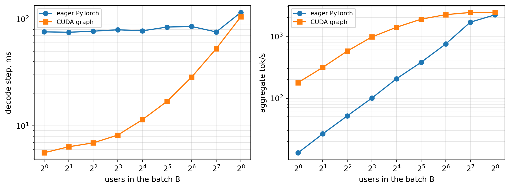
device: NVIDIA GeForce RTX 3070 Ti Laptop GPU; weights 0.99 GB; KV per token 12 KiB
B eager ms graph ms graph agg tok/s graph per-user tok/s throughput x vs B=1
1 75.97 5.60 179 178.7 1.0
2 75.28 6.37 314 157.0 1.8
4 77.04 6.93 577 144.3 3.2
8 79.46 8.20 975 121.9 5.5
16 77.68 11.44 1398 87.4 7.8
32 84.21 16.97 1886 58.9 10.6
64 85.27 28.66 2233 34.9 12.5
128 75.81 52.88 2420 18.9 13.5
256 115.60 105.39 2429 9.5 13.6The two curves separate the walls cleanly. The eager path is flat at tens of milliseconds whatever the batch: on this laptop each of the roughly two thousand small kernel launches in a 24-layer step costs tens of microseconds of Python and driver time on the CPU, so the CPU, not the GPU, sets the pace. That is the overhead wall in its purest form, and like the weight read it is a fixed cost per step that batching amortizes, which is why even the eager path’s throughput grows almost in proportion to \(B\). The CUDA graph replays the identical computation with the launches removed and exposes the GPU’s own curve. At \(B = 1\) the step takes under 6 ms, the same order as reading about 1 GB of weights through this laptop GPU’s few-hundred-GB/s pipe. Through the first doublings the step grows only slowly: eight users cost about one and a half times a single user’s step and receive more than five times the tokens, the memory-bound free lunch of Figure 253.8, measured. The curve bends sooner than the H100 model predicts for two reasons that are themselves lessons. The weights of a 0.5B model are small, so the per-sequence cache reads catch up with them after a few dozen users rather than a few hundred; and this simple attention path runs PyTorch’s unfused math kernel over the whole preallocated cache, materializing the attention scores in HBM, which is exactly the traffic that fused paged-attention kernels avoid. From \(B = 64\) on, step time roughly doubles with each doubling of \(B\) and aggregate throughput flattens near its ceiling: the KV-bandwidth and compute walls of Section 253.7. At \(B = 256\) the eager and graph times nearly meet, because the GPU work has finally grown as large as the CPU overhead. Production engines remove the overhead with CUDA graphs captured for a set of batch sizes and by overlapping the CPU scheduling of step \(t+1\) with the GPU execution of step \(t\); without them, a serving stack can leave an expensive GPU waiting on a cheap CPU.
253.7 Why Not Batch a Thousand Users? The Walls
If throughput grows with \(B\), why does every engine have a max_num_seqs limit in the hundreds rather than the tens of thousands? Because several independent walls cap \(B\), and whichever is lowest binds.
- The memory-bandwidth wall (weights). At small \(B\) the step is dominated by reading \(bN\) bytes. This wall is not a cap but the reason to batch: it sets the step-time floor that batching amortizes.
- The compute wall. When \(B(2N + 4LdS)/\pi\) exceeds the byte time, extra users cost proportional extra time; throughput stops growing. It binds only for short contexts (Equation 253.12).
- The KV capacity wall. The cache pool of Equation 253.7 holds at most \(B_{\text{KV}}\) sequences of length \(S\). Past it, a new user can only be admitted by evicting or preempting another. This is the most common binding wall in practice.
- The KV bandwidth wall. Even within capacity, each user adds \(S\kappa\) bytes read per step, so at long contexts step time grows linearly in \(B\) while the weight cost is long since amortized.
- The latency (SLO) wall. Each user’s speed is \(1/T(B,S)\). A service-level objective such as “TPOT under 50 ms” (20 tokens per second, faster than people read) caps \(B\) at the largest batch with \(T(B,S) \le 50\) ms.
- The overhead wall. Scheduling, sampling, and detokenization have per-sequence costs on the CPU. Kernel launches add a fixed CPU cost per step. As the eager measurement above showed, the CPU work per step can exceed the GPU work outright, and with thousands of sequences the per-sequence part grows until the CPU, not the GPU, bounds the step.
- The prefill interference wall. New users must be prefilled. A 4K-token prompt is a compute-bound pass that, if it runs inside a decode step, stalls every user in the batch for its duration, a latency spike on everyone’s TPOT. Chunked prefill (Agrawal et al. 2024) splits long prompts into fixed token-budget chunks that ride along with decode steps, bounding the stall; disaggregated serving (Zhong et al. 2024) runs prefill and decode on separate GPUs and ships the cache between them.
- The interconnect wall. With tensor parallelism across GPUs, every layer ends in an all-reduce over NVLink whose size grows with the number of tokens in the step.
| Wall | What grows with the batch | When it binds | Main remedies |
|---|---|---|---|
| Memory bandwidth (weights) | nothing: \(bN\) bytes once per step | small batches | batch more users; quantize weights |
| Compute | \(B(2N + 4LdS)\) FLOP per step | short contexts, large batches | lower-precision arithmetic (FP8, FP4); more GPUs |
| KV capacity | \(BS\kappa\) bytes held | long contexts | GQA or latent attention; KV quantization; paging; offload; more GPUs |
| KV bandwidth | \(BS\kappa\) bytes read per step | long contexts, large batches | GQA or latent attention; KV quantization; sparse or windowed attention |
| Latency objective | \(T(B, S)\) itself | tight TPOT targets | cap the batch; speculative decoding at low load |
| Overhead | CPU time per step and per sequence | small models, slow hosts | CUDA graphs; asynchronous scheduling; compiled engines |
| Prefill interference | prompt tokens inside a step | long prompts | chunked prefill; prefill-decode disaggregation |
| Interconnect | all-reduce bytes per layer | tensor parallelism | large NVLink domains; overlapping communication with compute |
The cell below evaluates walls 2, 3, and 5 for the 8B model on one H100 at several context lengths and reports the binding one.
Code
def max_B_under(fn, hi=1 << 16):
"""Largest B in [1, hi] with fn(B) True, assuming fn is monotone decreasing in truth."""
lo, best = 1, 0
while lo <= hi:
mid = (lo + hi) // 2
if fn(mid):
best, lo = mid, mid + 1
else:
hi = mid - 1
return best
rows = []
for S in [256, 1024, 4096, 16384, 65536]:
kv = kv_cap(S)
slo = max_B_under(lambda Bv: float(step_time(Bv, S)[0]) <= 0.050)
_, tm, tc = step_time(np.arange(1, 4097), S)
cross = np.argmax(tc > tm) + 1 if np.any(tc > tm) else None
caps = {"KV capacity": kv, "TPOT 50 ms SLO": slo}
binding = min(caps, key=caps.get)
rows.append({"context S": S, "compute-bound from B": cross if cross else "none",
"KV capacity cap": kv, "50 ms SLO cap": slo, "binding wall": binding,
"throughput at cap, tok/s": round(caps[binding] / float(step_time(caps[binding], S)[0]))})
pd.DataFrame(rows)| context S | compute-bound from B | KV capacity cap | 50 ms SLO cap | binding wall | throughput at cap, tok/s | |
|---|---|---|---|---|---|---|
| 0 | 256 | 406 | 1577 | 1517 | TPOT 50 ms SLO | 30349 |
| 1 | 1024 | none | 394 | 780 | KV capacity | 13731 |
| 2 | 4096 | none | 98 | 209 | KV capacity | 3614 |
| 3 | 16384 | none | 24 | 53 | KV capacity | 911 |
| 4 | 65536 | none | 6 | 13 | KV capacity | 229 |
The pattern is general. At 256-token contexts the batch can grow past a thousand users; it turns compute bound at around four hundred (earlier than the ideal \(B^\ast\) of Equation 253.12, because the model’s kernels reach only part of peak), and the latency objective is what finally binds. From 1K tokens up, the KV capacity wall binds first: about four hundred users at 1K, a hundred at 4K, a handful at 64K, with decode memory bound throughout. Batching a thousand users is possible only with short sequences, more memory (more GPUs), or a smaller cache per token.
Code
S_grid = np.unique(np.logspace(8, 17, 28, base=2).astype(int))
caps = {
"KV capacity": np.array([kv_cap(S) for S in S_grid], dtype=float),
"TPOT 50 ms": np.array([max_B_under(lambda Bv, S=S: float(step_time(Bv, S)[0]) <= 0.050) for S in S_grid], dtype=float),
"TPOT 25 ms": np.array([max_B_under(lambda Bv, S=S: float(step_time(Bv, S)[0]) <= 0.025) for S in S_grid], dtype=float),
}
comp_from = []
for S in S_grid:
_, tm, tc = step_time(np.arange(1, 4097), S)
comp_from.append(float(np.argmax(tc > tm) + 1) if np.any(tc > tm) else np.nan)
fig, ax = plt.subplots(figsize=(7.6, 4.4))
for (name, vals), col in zip(caps.items(), ["C1", "C0", "C4"]):
ax.loglog(S_grid, np.maximum(vals, 1), "-", color=col, lw=1.8, label=f"{name} cap")
ax.loglog(S_grid, comp_from, "k--", lw=1.4, label="compute bound above this batch")
usable = np.maximum(np.minimum.reduce(list(caps.values())), 1)
ax.fill_between(S_grid, 1, usable, color="C2", alpha=0.15, label="usable batch")
ax.set(xlabel="context length S, tokens", ylabel="users in the batch B", ylim=(1, 5000))
ax.legend(fontsize=8, loc="upper right"); ax.grid(alpha=0.3, which="both")
plt.tight_layout()
plt.show()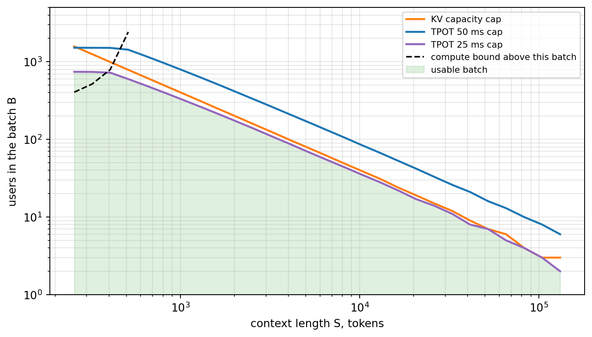
253.8 People Do Not Arrive Together: Batching Policies
Everything so far assumed a full batch is waiting. Real users arrive one at a time at random moments, and their replies end at unpredictable lengths. A batching policy decides how to turn that stream into forward passes. Let requests arrive as a Poisson process of rate \(\lambda\) and let output lengths \(G_i\) be independent with mean \(\mu\).
One at a time. Serve each request alone, start to finish. Latency is low when idle, but throughput is pinned at the single-user rate \(1/T(1,S)\) tokens per second. Once \(\lambda\mu\) exceeds it, the queue grows without bound.
Static batching. Wait until \(B\) requests are queued, run them together until all finish, then take the next \(B\). Two wastes appear. First, early arrivals wait for the batch to fill, unbounded at low load. Second, a batch lasts as long as its longest member, so slots of finished requests sit empty. For one batch the fraction of slot-steps doing useful work is
\[ \text{useful fraction} = \frac{\mathbb{E}\big[\sum_{i=1}^{B} G_i\big]}{B \,\mathbb{E}\big[\max_i G_i\big]} = \frac{\mu}{\mathbb{E}[\max_i G_i]} . \tag{253.15}\]
For exponentially distributed lengths with mean \(\mu\), the expected maximum of \(B\) is \(\mu H_B\) with \(H_B = \sum_{k=1}^{B} 1/k\) the harmonic number (the maximum is a sum of independent exponential gaps with rates \(B, B-1, \dots, 1\)), so only \(1/H_B\) of the slots are useful: \(48\) percent at \(B = 4\) and \(24\) percent at \(B = 32\). Worse, a finished request cannot return until its batch ends, and a new arrival cannot start until the batch ends.
Dynamic batching. Start a batch when either \(B_{\max}\) requests are queued or the oldest has waited a timeout \(\tau\), then run it to completion. This is the classic policy of model servers such as Clipper (Crankshaw et al. 2017) and NVIDIA Triton (its max_queue_delay_microseconds setting), and it is close to ideal for models where every request costs one forward pass of a fixed shape, image classifiers being the canonical case: there is no “longest member”, so the only trade-off is the timeout. For generative models it fixes the wait-to-fill problem but keeps the run-to-longest waste.
Continuous batching (iteration-level scheduling). Re-form the batch at every decode step: a finished sequence leaves immediately and returns its tokens; a waiting request joins at the next step. Slots never sit empty while work is waiting. This is the idea Yu et al. (2022) introduced, examined in detail in Section 253.9, and it is what vLLM, SGLang, Text Generation Inference, llama.cpp’s server, and TensorRT-LLM (which calls it in-flight batching) all do today.
| Policy | Batch formed | New request joins | Results return | Built-in waste | Good fit | Examples |
|---|---|---|---|---|---|---|
| One at a time | one request | after the current one finishes | when it finishes | every slot but one idles | debugging; zero load | naive scripts |
| Static | when \(B\) requests are queued | at the next batch | when the whole batch ends | waiting to fill; running to the longest member | offline jobs with similar lengths | early serving setups |
| Dynamic | at \(B_{\max}\) queued or after timeout \(\tau\) | at the next batch | when the whole batch ends | running to the longest member | fixed-shape models: classifiers, embedders | Clipper, Triton, TensorFlow Serving |
| Continuous | every iteration | at the next iteration | as soon as it finishes | almost none; KV capacity bounds the batch | autoregressive generation | Orca, vLLM, SGLang, TGI, TensorRT-LLM, llama.cpp |
# SymPy check of the static-batching waste: E[max of B exponentials] = mu * H_B.
x, mu = sp.symbols("x mu", positive=True)
for Bv in [2, 3, 4]:
cdf_max = (1 - sp.exp(-x / mu)) ** Bv
e_max = sp.integrate(1 - cdf_max, (x, 0, sp.oo)) # E[X] = integral of the survival function
print(f"B={Bv}: E[max] = {sp.simplify(e_max)}, mu*H_B = {mu * sp.harmonic(Bv)},"
f" equal: {sp.simplify(e_max - mu * sp.harmonic(Bv)) == 0}")
rng = np.random.default_rng(1)
for Bv in [4, 32]:
G = rng.exponential(100, size=(200_000, Bv))
print(f"B={Bv}: simulated useful fraction {G.mean() / G.max(axis=1).mean():.3f}, 1/H_B = {1 / float(sp.harmonic(Bv)):.3f}")B=2: E[max] = 3*mu/2, mu*H_B = 3*mu/2, equal: True
B=3: E[max] = 11*mu/6, mu*H_B = 11*mu/6, equal: True
B=4: E[max] = 25*mu/12, mu*H_B = 25*mu/12, equal: True
B=4: simulated useful fraction 0.481, 1/H_B = 0.480
B=32: simulated useful fraction 0.246, 1/H_B = 0.246Code
import matplotlib.pyplot as plt
g_w = np.random.default_rng(5)
Bw = np.arange(1, 65)
inv_H = np.array([1 / float(sp.harmonic(int(b))) for b in Bw])
def useful_fraction(sampler, Bv, n=20_000):
G = sampler((n, Bv)).astype(float)
return G.mean() / G.max(axis=1).mean()
uni = [useful_fraction(lambda s: g_w.integers(1, 257, s), b) for b in Bw]
logn = [useful_fraction(lambda s: np.ceil(g_w.lognormal(np.log(80), 1.0, s)), b) for b in Bw]
fig, ax = plt.subplots(figsize=(7.4, 3.9))
ax.plot(Bw, inv_H, lw=2, label="exponential lengths: 1/H_B (exact)")
ax.plot(Bw, uni, lw=2, label="uniform 1 to 256 tokens (simulated)")
ax.plot(Bw, logn, lw=2, label="log-normal, heavy tail (simulated)")
ax.axhline(1.0, color="k", ls=":", label="continuous batching under load")
for b in (8, 32):
ax.annotate(f"B={b}: {inv_H[b - 1]:.0%}", (b, inv_H[b - 1]), textcoords="offset points", xytext=(4, 6),
fontsize=8, color="C0")
ax.set(xlabel="static batch size B", ylabel="useful fraction of slot-steps", ylim=(0, 1.05))
ax.legend(fontsize=8, loc="upper right", bbox_to_anchor=(1.0, 0.94)); ax.grid(alpha=0.3)
plt.tight_layout()
plt.show()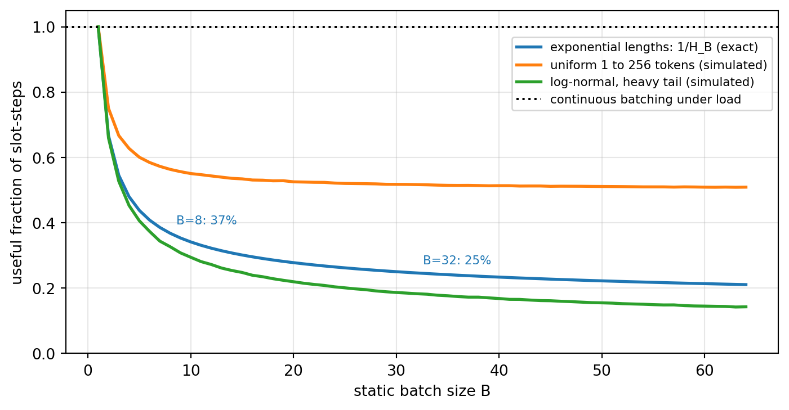
253.8.1 Seeing the empty slots
The next cell runs one small, fixed trace of eight requests through static batching and continuous batching with four slots, step by step, and draws which request occupies each slot at each step. The same trace is used for the Julia and Rust versions in Section 253.12.
Code
TRACE = [(0, 12), (0, 3), (1, 7), (2, 2), (3, 9), (4, 4), (5, 6), (6, 3)] # (arrival step, output tokens)
SLOTS = 4
def simulate_static(trace, slots):
"""Wait for `slots` requests (or the end of the trace), run until all finish."""
t, i, grid, done, finish = 0, 0, [], 0, {}
while i < len(trace):
batch = list(range(i, min(i + slots, len(trace))))
t = max(t, trace[batch[-1]][0]) # wait for the batch to fill
remaining = {r: trace[r][1] for r in batch}
for _ in range(max(remaining.values())):
grid.append([r if remaining.get(r, 0) > 0 else None for r in batch] + [None] * (slots - len(batch)))
for r in batch:
if remaining[r] > 0:
remaining[r] -= 1
if remaining[r] == 0:
finish[r] = t + 1
t += 1
for r in batch: # results return when the batch ends
finish[r] = t
i += slots
return grid, finish, t
def simulate_continuous(trace, slots):
"""Iteration-level: refill free slots from the queue at every step."""
t, nxt, active, grid, finish = 0, 0, [None] * slots, [], {}
remaining = {r: g for r, (_, g) in enumerate(trace)}
while len(finish) < len(trace):
for s in range(slots):
if active[s] is None and nxt < len(trace) and trace[nxt][0] <= t:
active[s], nxt = nxt, nxt + 1
grid.append(list(active))
for s, r in enumerate(active):
if r is not None:
remaining[r] -= 1
if remaining[r] == 0:
finish[r], active[s] = t + 1, None
t += 1
return grid, finish, t
fig, axes = plt.subplots(2, 1, figsize=(9, 3.6), sharex=True)
summary = {}
for ax, (name, sim) in zip(axes, [("static", simulate_static), ("continuous", simulate_continuous)]):
grid, finish, steps = sim(TRACE, SLOTS)
useful = sum(g for _, g in TRACE)
lat = [finish[r] - TRACE[r][0] for r in range(len(TRACE))]
summary[name] = (steps, useful / (steps * SLOTS), np.mean(lat))
for st, row in enumerate(grid):
for s, r in enumerate(row):
ax.add_patch(plt.Rectangle((st, s), 1, 1, color=plt.cm.tab10(r) if r is not None else "0.88", ec="white"))
if r is not None:
ax.text(st + 0.5, s + 0.5, str(r), ha="center", va="center", fontsize=7, color="white")
ax.set_ylim(0, SLOTS); ax.set_xlim(0, 24); ax.set_yticks([]); ax.set_ylabel(name)
axes[-1].set_xlabel("decode step")
plt.tight_layout()
plt.show()
for name, (steps, util, lat) in summary.items():
print(f"{name:>10}: {steps:2d} steps, slot utilization {util:.2f}, mean latency {lat:.1f} steps")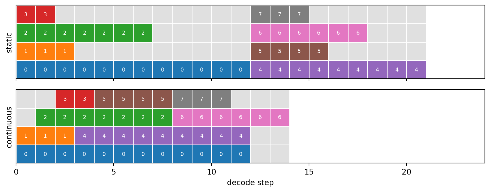
static: 23 steps, slot utilization 0.50, mean latency 15.9 steps
continuous: 14 steps, slot utilization 0.82, mean latency 6.4 steps253.8.2 A discrete-event serving simulator (executed)
Small traces build intuition; capacity planning needs load curves. The simulator below drives the four policies with a Poisson arrival stream, an Orca-style request mix (prompt lengths uniform on 32 to 512 tokens, output lengths uniform on 1 to 256), and the step-time model of Equation 253.13 for Llama 3.1 8B on one H100, including the prefill work that new requests add to the step they join. It reports throughput, end-to-end latency, the per-token normalized latency that the Orca paper plots, and time to first token.
from collections import deque
def step_cost(n_decode, ctx_sum, prefill_tokens, N=N8, L=L8, d=d8, kappa=kap8, b=2, hw=H100):
"""Time of one engine step: n_decode decoding sequences (total cached tokens ctx_sum)
plus prefill_tokens new prompt tokens processed in the same forward pass."""
tokens = n_decode + prefill_tokens
flops = 2 * N * tokens + 4 * L * d * ctx_sum
bytes_ = b * N + ctx_sum * kappa + prefill_tokens * kappa
return max(bytes_ / (ETA_M * hw["beta"]), flops / (ETA_C * hw["pi"])) + T0 + T1 * tokens
def make_trace(rate, n=1500, seed=0, out_hi=256):
g = np.random.default_rng(seed)
arrivals = np.cumsum(g.exponential(1 / rate, n))
prompts = g.integers(32, 513, n)
outs = g.integers(1, out_hi + 1, n)
return [(float(a), int(p), int(o)) for a, p, o in zip(arrivals, prompts, outs)]
def serve(trace, policy, max_bs=32, timeout=0.05, static_bs=8):
"""Simulate a policy. Returns per-request (arrival, first_token_time, finish_time, out_len)."""
q = deque(range(len(trace)))
now, res = 0.0, {}
if policy == "continuous":
active = {} # req -> tokens generated so far
while q or active:
if not active and q and trace[q[0]][0] > now:
now = trace[q[0]][0] # idle until the next arrival
new = []
while q and trace[q[0]][0] <= now and len(active) + len(new) < max_bs:
new.append(q.popleft())
ctx = sum(trace[r][1] + g for r, g in active.items())
dt = step_cost(len(active), ctx, sum(trace[r][1] for r in new))
now += dt
for r in new: # prefill emits the first token
active[r] = 1
res[r] = [trace[r][0], now, None]
for r in list(active):
if r not in new:
active[r] += 1
if active[r] >= trace[r][2]:
res[r][2] = now
del active[r]
return res
# Request-level policies: form a batch, prefill it, decode until the longest finishes.
while q:
head = q[0]
if policy == "one":
batch = [q.popleft()]
now = max(now, trace[head][0])
else:
want = static_bs if policy == "static" else max_bs
ready_at = trace[q[min(want, len(q)) - 1]][0] # time the batch would be full
if policy == "dynamic":
start = max(now, min(ready_at, trace[head][0] + timeout))
else:
start = max(now, ready_at)
now = start
batch = []
while q and trace[q[0]][0] <= now and len(batch) < want:
batch.append(q.popleft())
now += step_cost(0, 0, sum(trace[r][1] for r in batch))
first = now
longest = max(trace[r][2] for r in batch)
for step in range(1, longest):
ctx = sum(trace[r][1] + step for r in batch)
now += step_cost(len(batch), ctx, 0) # finished members still occupy slots
for r in batch:
res[r] = [trace[r][0], first, now] # results return when the batch ends
return res
def metrics(trace, res):
a = np.array([res[r][0] for r in range(len(trace))])
f1 = np.array([res[r][1] for r in range(len(trace))])
fin = np.array([res[r][2] for r in range(len(trace))])
outs = np.array([t[2] for t in trace])
lat = fin - a
return {"throughput tok/s": outs.sum() / (fin.max() - a.min()),
"median latency s": np.median(lat), "p99 latency s": np.percentile(lat, 99),
"median ms per output token": 1e3 * np.median(lat / outs),
"median TTFT s": np.median(f1 - a)}Code
rates = [0.5, 1, 2, 4, 8, 16, 24, 32]
policies = {"one at a time": dict(policy="one"), "static (B=8)": dict(policy="static", static_bs=8),
"dynamic (B<=32, 50 ms)": dict(policy="dynamic", max_bs=32),
"continuous (B<=32)": dict(policy="continuous", max_bs=32)}
curves, table = {}, []
for pname, kw in policies.items():
pts = []
for lam in rates:
tr = make_trace(lam)
m = metrics(tr, serve(tr, **kw))
pts.append((lam, m))
if lam in (2, 16):
table.append({"policy": pname, "arrival rate req/s": lam, **{k: round(v, 3) for k, v in m.items()}})
curves[pname] = pts
fig, axes = plt.subplots(1, 2, figsize=(10, 3.8))
for pname, pts in curves.items():
thr = [m["throughput tok/s"] for _, m in pts]
axes[0].plot(thr, [m["median ms per output token"] for _, m in pts], "o-", label=pname)
axes[1].plot([lam for lam, _ in pts], [m["median TTFT s"] for _, m in pts], "o-", label=pname)
axes[0].set_xlabel("achieved throughput, tok/s"); axes[0].set_ylabel("median latency per output token, ms")
axes[1].set_xlabel("arrival rate, req/s"); axes[1].set_ylabel("median time to first token, s")
for a in axes:
a.set_yscale("log"); a.grid(alpha=0.3, which="both")
axes[0].legend(fontsize=8)
plt.tight_layout()
plt.show()
pd.DataFrame(table)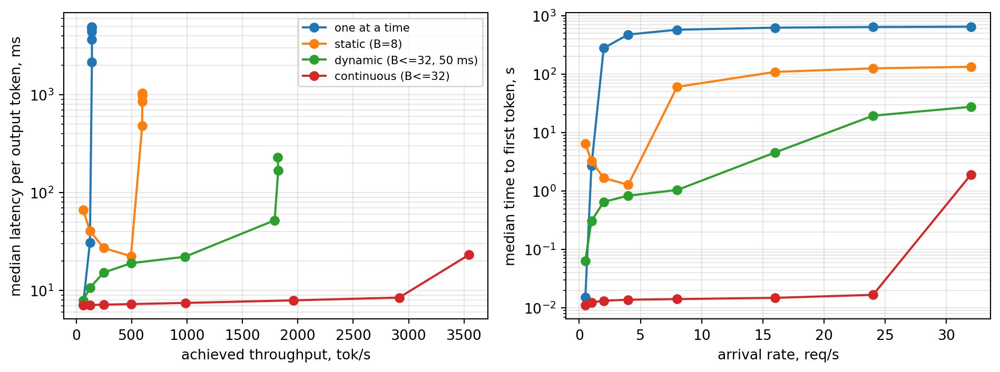
| policy | arrival rate req/s | throughput tok/s | median latency s | p99 latency s | median ms per output token | median TTFT s | |
|---|---|---|---|---|---|---|---|
| 0 | one at a time | 2 | 141.995 | 278.834 | 567.599 | 2151.543 | 278.024 |
| 1 | one at a time | 16 | 141.995 | 622.402 | 1230.669 | 4776.666 | 621.591 |
| 2 | static (B=8) | 2 | 247.783 | 3.277 | 8.135 | 27.141 | 1.666 |
| 3 | static (B=8) | 16 | 596.616 | 110.258 | 221.750 | 856.573 | 108.857 |
| 4 | dynamic (B<=32, 50 ms) | 2 | 247.531 | 2.060 | 3.310 | 15.235 | 0.653 |
| 5 | dynamic (B<=32, 50 ms) | 16 | 1791.037 | 6.432 | 11.562 | 52.091 | 4.564 |
| 6 | continuous (B<=32) | 2 | 247.795 | 0.903 | 1.798 | 7.160 | 0.013 |
| 7 | continuous (B<=32) | 16 | 1959.877 | 0.992 | 2.004 | 7.923 | 0.015 |
Read the left panel the way the Orca paper reads its Figure 10: lower and further right is better. One-at-a-time serving saturates first, at its single-user token rate, and its latency then explodes because the queue grows without bound. Static batching pays both wastes: at low load requests sit waiting for the batch to fill, and at every load slots idle until the batch’s longest member finishes. Dynamic batching removes the fill wait but keeps the run-to-longest waste, and a newly arrived request still waits for the whole current batch. Continuous batching keeps per-token latency near the single-step time over a much wider range of load and reaches the highest throughput, because no slot ever idles while work is queued and new requests start at the next step instead of the next batch. Little’s law, \(\bar{B} = \lambda \cdot \mathbb{E}[\text{time in system}]\), explains the shape: at a fixed arrival rate, a policy that shortens time in system needs fewer concurrent slots, leaving headroom for higher load.
253.9 Orca: Iteration-Level Scheduling and Selective Batching
Yu et al. (2022), published at OSDI 2022 by researchers at Seoul National University and FriendliAI, is the paper that turned continuous batching from an idea into a system design. It is worth reading closely, because nearly every engine since inherits its structure, and its limitations explain what came next.
253.9.1 The two problems
The paper starts from the interface between a serving system (such as NVIDIA Triton) and an execution engine (such as FasterTransformer) as it stood in 2021. The two interact only when the server hands an idle engine a batch, and when the engine returns the finished batch. Scheduling is at request granularity. For generative models that causes the paper’s first challenge:
- C1, early-finished and late-joining requests. Requests in a batch need different numbers of iterations. A request that emits its end token early keeps occupying the batch, computing on an “inactive” request, and cannot return to its client until the whole batch is done. A request that arrives mid-batch waits until the whole batch is done. Training never has this problem, because teacher forcing processes a whole sequence in one pass.
The obvious fix, scheduling every iteration, runs into the second challenge:
- C2, batching an arbitrary set of requests. Batching requires identical operations on identically shaped tensors. Two requests at a given iteration cannot be naively batched if (1) both are in the initiation phase (prefill) with different numbers of prompt tokens, (2) both are in the increment phase (decode) at different positions, so their attention keys and values have different lengths, or (3) one is in each phase. With fine-grained scheduling and random arrivals, the chance that a set of requests happens to share a shape falls exponentially with batch size.
253.9.2 Solution 1: iteration-level scheduling
The scheduler repeats a three-step loop: (1) select the requests to run next, (2) invoke the engine to execute one iteration for them, and (3) receive the results, one output token per request. Because control returns every iteration, a finished request is detected and returned to its client immediately, and a newly arrived request can be selected for the very next iteration. The system has four components: an endpoint (HTTPS or gRPC) that receives requests, a request pool that holds every request for its lifetime, a scheduler that monitors the pool and picks the batch for each iteration, and the execution engine that runs one iteration of the model and returns tokens, which the scheduler appends to each request in the pool.
flowchart LR
C["Clients"] --> EP["Endpoint, HTTPS or gRPC"]
EP --> RP["Request pool"]
SCH["Scheduler"] -- "1. select requests" --> RP
SCH -- "2. run one iteration" --> ENG["Execution engine on GPUs"]
ENG -- "3. one new token per request" --> SCH
SCH -- "append tokens, remove finished" --> RP
RP -- "finished responses" --> EP
253.9.3 Solution 2: selective batching
The key observation behind selective batching is that most operations in a transformer do not care which request a token belongs to. Linear layers, layer normalization, residual adds, and GeLU act on each token independently. So instead of the canonical \([B, L, H]\) batch tensor, Orca concatenates the tokens of all scheduled requests into a single \([\sum_i L_i, H]\) tensor, with no batch dimension, and runs all non-attention operations on it as one big batched operation. Only attention needs to know which tokens belong together. Before attention, a Split operation cuts the flat tensor back into per-request pieces; attention runs separately for each request, reading that request’s earlier keys and values from the Attention K/V manager, which stores them per request until the scheduler says the request is finished; a Merge operation reassembles the outputs into \([\sum_i L_i, H]\) for the rest of the layer. In the paper’s example, two decoding requests contribute one token each and two prefilling requests contribute two and three tokens, giving a \([7, H]\) tensor for every linear layer.
flowchart LR
X1["x1: decode, 1 token"] --> FL["Flatten to 7 tokens by H"]
X2["x2: decode, 1 token"] --> FL
X3["x3: prefill, 2 tokens"] --> FL
X4["x4: prefill, 3 tokens"] --> FL
FL --> QKV["QKV Linear on all 7 tokens at once"]
QKV --> SP["Split by request"]
SP --> A1["Attention for x1"]
SP --> A2["Attention for x2"]
SP --> A3["Attention for x3"]
SP --> A4["Attention for x4"]
KVM["Attention KV manager"] --> A1
KVM --> A2
A1 --> MG["Merge back to 7 tokens by H"]
A2 --> MG
A3 --> MG
A4 --> MG
MG --> OUT["Out Linear, LayerNorm, MLP on all 7 tokens"]
This is efficient precisely because of the roofline argument: the linear layers are where the weight bytes are read, and they are fully batched across all \(\sum_i L_i\) tokens, so the expensive weight read is amortized over every token in the iteration. Attention has no weights to share, so splitting it per request costs little batching efficiency. The cell below implements one selective-batching layer and verifies that it computes exactly what processing each request alone would.
rng = np.random.default_rng(7)
H, NH = 16, 2 # hidden size, attention heads
DH = H // NH
Wqkv = rng.normal(0, 0.3, (H, 3 * H)); Wo = rng.normal(0, 0.3, (H, H))
def attention(q, k, v, causal_offset):
"""Multi-head attention for one request. q: [n, H]; k, v: [m, H] including cached positions."""
n, m = q.shape[0], k.shape[0]
out = np.zeros((n, H))
for h in range(NH):
sl = slice(h * DH, (h + 1) * DH)
s = q[:, sl] @ k[:, sl].T / np.sqrt(DH)
mask = np.arange(m)[None, :] > (causal_offset + np.arange(n))[:, None]
s = np.where(mask, -np.inf, s)
w = np.exp(s - s.max(1, keepdims=True)); w /= w.sum(1, keepdims=True)
out[:, sl] = w @ v[:, sl]
return out
def layer_one_request(x, kv):
"""Reference: process one request alone. x: [n_new, H]; kv: cached (k, v) or None."""
qkv = x @ Wqkv
q, k, v = qkv[:, :H], qkv[:, H:2 * H], qkv[:, 2 * H:]
if kv is not None:
k, v = np.vstack([kv[0], k]), np.vstack([kv[1], v])
offset = 0 if kv is None else kv[0].shape[0]
return attention(q, k, v, offset) @ Wo, (k, v)
def layer_selective(xs, kvs):
"""Orca selective batching: one flat [sum L_i, H] tensor for Linear layers, split for attention."""
lens = [x.shape[0] for x in xs]
flat = np.vstack(xs) # [sum L_i, H], no batch dimension
qkv = flat @ Wqkv # ONE batched Linear for every token
pieces = np.split(qkv, np.cumsum(lens)[:-1]) # Split
outs, new_kvs = [], []
for piece, kv in zip(pieces, kvs): # attention per request, with its K/V
q, k, v = piece[:, :H], piece[:, H:2 * H], piece[:, 2 * H:]
if kv is not None:
k, v = np.vstack([kv[0], k]), np.vstack([kv[1], v])
outs.append(attention(q, k, v, 0 if kv is None else kv[0].shape[0]))
new_kvs.append((k, v))
merged = np.vstack(outs) # Merge back to [sum L_i, H]
return merged @ Wo, new_kvs # ONE batched Linear again
# Two decoding requests (1 new token, caches of 3 and 1 tokens) and two prefills (2 and 3 tokens),
# mirroring the paper's example batch of 7 tokens.
cache_x1 = (rng.normal(size=(3, H)), rng.normal(size=(3, H)))
cache_x2 = (rng.normal(size=(1, H)), rng.normal(size=(1, H)))
xs = [rng.normal(size=(1, H)), rng.normal(size=(1, H)), rng.normal(size=(2, H)), rng.normal(size=(3, H))]
kvs = [cache_x1, cache_x2, None, None]
out_sel, kv_sel = layer_selective(xs, kvs)
out_ref = np.vstack([layer_one_request(x, kv)[0] for x, kv in zip(xs, kvs)])
print("flat batch shape:", np.vstack(xs).shape)
print("selective batching == per-request processing:", np.allclose(out_sel, out_ref))
print("cache lengths after the iteration:", [k.shape[0] for k, _ in kv_sel])flat batch shape: (7, 16)
selective batching == per-request processing: True
cache lengths after the iteration: [4, 2, 2, 3]The flat batch has seven rows, one per token, exactly as in the paper’s figure, and the output matches per-request processing to floating-point precision. Modern engines do the same thing with a single fused “varlen” attention kernel that takes the flat token tensor plus per-request offsets and block tables, instead of a Python-level split, but the decomposition is Orca’s.
253.9.4 The scheduling algorithm
With selective batching, any set of requests can be batched, so the remaining question is which set. Orca’s scheduler (Algorithm 1 in the paper) has three parameters: n_workers, the number of pipeline stages; max_bs, the maximum batch size; and n_slots, the number of KV slots in the K/V manager’s pre-allocated memory, where one slot holds the key and value of one token. Its policy is deliberately simple:
- Iteration-level first-come-first-served. For any two requests in the pool, if \(x_i\) arrived before \(x_j\), then \(x_i\) has run at least as many iterations as \(x_j\). Requests are selected in arrival order, skipping those currently running in the pipeline, up to
max_bs. A late request with a short reply may still finish first. - Worst-case KV reservation. When a request is selected for the first time, the scheduler reserves
max_tokensslots for it (prompt length plus the maximum number of tokens it may generate), and admits it only if the total reservation stays withinn_slots. Because no request can exceedmax_tokens, an admitted request can never run out of cache mid-generation, which rules out deadlock: the paper notes that a naive design could reach a state where no request can take another step because no slot is free for the next key and value. The reservation is released when the request finishes. - Pipelining. The scheduler does not wait for a batch to return before scheduling the next one; it keeps up to
n_workersbatches in flight, so every pipeline stage is always busy.
The paper also gives tuning advice that remains good practice: n_slots needs no experiments (use the largest value that fits in memory, since memory use depends mostly on it), whereas max_bs trades throughput against latency and should be tuned against a latency budget. Here is the algorithm in Python:
def orca_select(pool, n_rsrv, max_bs, n_slots):
"""Algorithm 1, Select(): FCFS over non-running requests, reserving max_tokens at first schedule."""
batch = []
for req in sorted((r for r in pool if r["state"] != "RUNNING"), key=lambda r: r["arrival"]):
if len(batch) == max_bs:
break
if req["state"] == "INITIATION":
if n_rsrv + req["max_tokens"] > n_slots:
break # cannot reserve: stop, preserving FCFS
n_rsrv += req["max_tokens"]
batch.append(req)
return batch, n_rsrv
pool = [{"id": i, "arrival": i, "state": "INITIATION", "max_tokens": mt}
for i, mt in enumerate([600, 300, 900, 200, 400])]
batch, n_rsrv = orca_select(pool, 0, max_bs=4, n_slots=1700)
print("selected:", [r["id"] for r in batch], " reserved slots:", n_rsrv)
print("request 2 needs 900 more slots and does not fit; request 3 (200) would, but FCFS stops at 2")selected: [0, 1] reserved slots: 900
request 2 needs 900 more slots and does not fit; request 3 (200) would, but FCFS stops at 2253.9.5 Distributed execution
To serve models with hundreds of billions of parameters, Orca combines two forms of model parallelism. Intra-layer (tensor) parallelism splits each matrix multiply across GPUs; inter-layer (pipeline) parallelism assigns consecutive layers to different workers. An engine master sends each iteration’s tokens and a small control message (batch size, sequence lengths, which requests finished) to the first worker, whose controller launches kernels and immediately forwards the control message to the next worker without waiting for its GPUs to finish; only the last worker synchronizes and returns tokens. A design point that carries over to modern engines: Orca separates the control plane from the data plane. Control messages go over gRPC between CPUs, while NCCL (GPU-to-GPU communication) carries only tensor data. Sending control through NCCL would force a CPU-GPU synchronization at every iteration, exactly the per-step overhead Section 253.6 warned about.
Pipelining is also where iteration-level scheduling pays twice. FasterTransformer pipelines a batch by splitting it into microbatches, so a pipeline of depth three needs the batch to be large enough to split, and a new request still cannot enter until the batch finishes. Orca instead injects a new batch into the first stage while earlier batches occupy later stages, keeping all workers busy with independent work.
Code
import matplotlib.pyplot as plt
N_WORKERS, N_SLOTS = 3, 12
def orca_cells(batches=("AB", "CD", "EF")):
cells = {}
for t in range(N_SLOTS):
for w in range(N_WORKERS):
k = t - w
if k >= 0:
b = batches[k % len(batches)]
it = k // len(batches) + 1
cells[(w, t)] = (b, f"{b[0]}{it} {b[1]}{it}")
return cells
def microbatch_cells(micro=("A", "B")):
cells = {}
for j, mb in enumerate(micro):
it, t0 = 1, j
while t0 < N_SLOTS:
for w in range(N_WORKERS):
if t0 + w < N_SLOTS:
cells[(w, t0 + w)] = (mb, f"{mb}{it}")
t0 += N_WORKERS # next iteration waits for this one to leave the pipeline
it += 1
return cells
colors = {"AB": "C0", "CD": "C1", "EF": "C2", "A": "C0", "B": "C9"}
fig, axes = plt.subplots(2, 1, figsize=(10, 3.9), sharex=True)
for ax, (title, cells) in zip(axes, [("Orca: iteration-level", orca_cells()),
("request-level, 2 microbatches", microbatch_cells())]):
for (w, t), (key, lab) in cells.items():
ax.add_patch(plt.Rectangle((t, N_WORKERS - 1 - w), 1, 1, facecolor=colors[key], edgecolor="white"))
ax.text(t + 0.5, N_WORKERS - 0.5 - w, lab, ha="center", va="center", fontsize=7, color="white")
busy = len(cells) / (N_WORKERS * N_SLOTS)
ax.set_title(f"{title}: workers busy {busy:.0%} of slots", fontsize=9)
ax.set_xlim(0, N_SLOTS); ax.set_ylim(0, N_WORKERS)
ax.set_yticks([w + 0.5 for w in range(N_WORKERS)], [f"worker {N_WORKERS - w}" for w in range(N_WORKERS)])
for spine in ax.spines.values():
spine.set_color("0.7")
axes[-1].set_xlabel("time slot (one pipeline stage of one iteration)")
plt.tight_layout()
plt.show()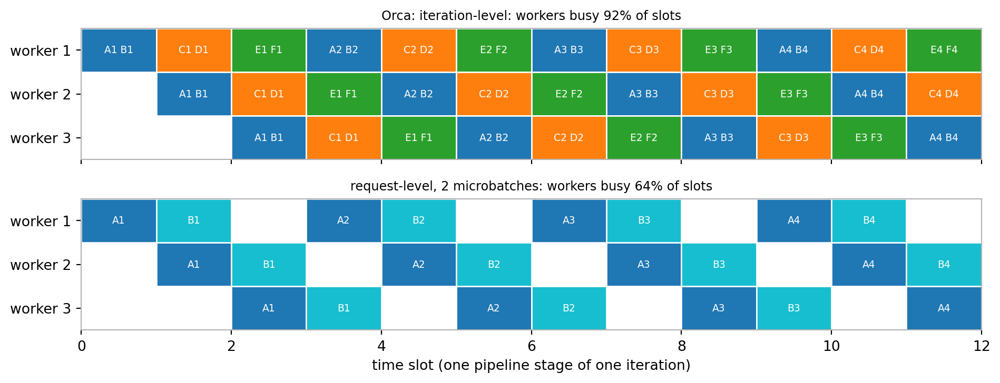
253.9.6 What the evaluation showed
The evaluation ran on Azure ND96asr A100 v4 virtual machines, each with eight 40 GB A100 GPUs over NVLink and 1.6 Tb/s of InfiniBand between machines, using up to four machines. Models were GPT-3-style configurations of 13B, 101B, 175B, and 341B parameters in FP16 with a 2048-token maximum sequence; the 175B model, for example, ran across 16 GPUs as two pipeline stages of eight-way tensor parallelism. Since no public trace of generative-model requests existed, the authors synthesized one: prompt lengths uniform on 32 to 512 tokens, generation lengths uniform on 1 to 128, arrivals from a Poisson process at varying rate, and no early end-of-sequence (every request generated exactly its sampled length, because there was no trained checkpoint to decide when to stop). The baseline was FasterTransformer behind a custom request-level dynamic batcher, the policy of Triton and TensorFlow Serving.
| Model | Layers | Hidden size | Pipeline (inter-layer) stages | Tensor (intra-layer) degree | GPUs |
|---|---|---|---|---|---|
| GPT 13B | 40 | 5120 | 1 | 1 | 1 |
| GPT 101B | 80 | 10240 | 1 | 8 | 8 |
| GPT 175B | 96 | 12288 | 2 | 8 | 16 |
| GPT 341B | 120 | 15360 | 4 | 8 | 32 |
In an engine-only microbenchmark with identical requests (so scheduling did not matter), Orca’s engine roughly matched FasterTransformer. End to end, Orca dominated. For the 175B model, matching a median normalized latency of 190 ms per token, FasterTransformer sustained 0.185 requests per second and Orca 6.81, the headline 36.9 times throughput improvement. Raising Orca’s max_bs increased throughput without hurting latency, because late arrivals “hitch a ride” on the running batch instead of waiting, though the authors caution this is not guaranteed for every hardware and workload.
253.9.7 Limitations, and what came after
Each of Orca’s simplifications became the starting point of a later system.
- Reservation wastes the cache. Reserving
max_tokensslots for every request means most reserved memory holds nothing for most of a request’s life, which caps the batch far below what memory could hold. vLLM’s PagedAttention (Kwon et al. 2023) replaced reservation with on-demand block allocation plus preemption (swap or recompute) when blocks run out, reporting 2 to 4 times higher throughput than Orca and FasterTransformer at the same latency. - Prefill and decode share iterations. Orca batches a new request’s whole prompt into an iteration with ongoing decodes, so a long prompt stalls every decoding user. Sarathi-Serve (Agrawal et al. 2024) adds chunked prefill and stall-free scheduling under a per-iteration token budget; DistServe (Zhong et al. 2024) disaggregates prefill and decode onto separate GPUs to optimize each phase’s latency target independently.
- No reuse across requests. Each request computes its own cache from scratch. SGLang’s RadixAttention (Zheng et al. 2024) caches prefixes across requests and schedules to maximize prefix hits.
The cell below quantifies the first limitation. It admits requests from a queue under a fixed KV budget either Orca’s way (reserve prompt plus max_tokens up front, here a cap of 1024 generated tokens while actual replies average about 128) or vLLM’s way (16-token blocks allocated as tokens are produced), and reports how many requests run concurrently and how much of the budget holds real tokens.
def admission(policy, budget_tokens=60_000, max_gen=1024, block=16, n=20_000, seed=3, steps=3000):
"""Admit requests under a fixed KV budget (in token slots), Orca-style or paged.
Preempted requests return to the front of the queue and later recompute their cache."""
g = np.random.default_rng(seed)
prompts, outs = g.integers(32, 513, n), np.minimum(g.geometric(1 / 128, n), max_gen)
queue, active = deque(range(n)), {}
conc, used_frac, finished_tokens, preemptions = [], [], 0, 0
def need(r, gen): # slots a request occupies right now
if policy == "reserve":
return prompts[r] + max_gen # worst case, held for the whole life
return -(-(prompts[r] + gen) // block) * block # whole blocks only, rounded up
for _ in range(steps):
held = sum(need(r, gg) for r, gg in active.items())
while queue and held + need(queue[0], 0) <= budget_tokens:
r = queue.popleft(); active[r] = 0; held += need(r, 0)
if policy == "paged": # next step needs blocks: preempt newest
while sum(need(r, gg + 1) for r, gg in active.items()) > budget_tokens:
victim = max(active); del active[victim]; queue.appendleft(victim); preemptions += 1
real = sum(prompts[r] + gg for r, gg in active.items())
held = sum(need(r, gg) for r, gg in active.items())
conc.append(len(active)); used_frac.append(real / held if held else 0.0)
for r in list(active):
active[r] += 1
if active[r] >= outs[r]:
finished_tokens += outs[r]; del active[r]
return np.mean(conc[200:]), np.mean(used_frac[200:]), finished_tokens / steps, preemptions
for pol, label in [("reserve", "Orca reservation (max_tokens)"), ("paged", "PagedAttention, blocks of 16")]:
c, f, tps, pre = admission(pol)
print(f"{label:>30}: concurrent requests {c:6.1f} | KV slots holding real tokens {100 * f:5.1f}%"
f" | completed tokens per step {tps:6.1f} | preemptions {pre}") Orca reservation (max_tokens): concurrent requests 45.9 | KV slots holding real tokens 29.9% | completed tokens per step 43.9 | preemptions 0
PagedAttention, blocks of 16: concurrent requests 149.3 | KV slots holding real tokens 98.1% | completed tokens per step 144.0 | preemptions 1633With the same memory, block allocation runs about three times as many requests concurrently and completes about three times as many tokens per step, with nearly all of its KV slots holding real tokens, while reservation leaves seven in ten slots empty. The reservation figure lands inside the 20 to 38 percent range that Kwon et al. (2023) measured in existing systems. Paging is not free: because it admits optimistically, it must preempt when growing sequences exhaust the pool, here more than a thousand times over the run, each costing a recomputation of the preempted request’s cache. That trade, a little recomputation for three times the concurrency, is what made paging the default in every major engine after 2023.
Figure 253.16 shows the mechanism on a region small enough to see slot by slot.
Code
import matplotlib.pyplot as plt
from matplotlib.colors import to_rgba
HELD = [10, 14, 6, 9, 12, 7, 15, 10] # tokens each request currently holds (prompt plus generated)
RESERVE, BLOCK, COLS, ROWS = 32, 4, 16, 6
SLOTS_TOTAL = COLS * ROWS
owner_res, fill_res = [None] * SLOTS_TOTAL, [False] * SLOTS_TOTAL
for r in range(SLOTS_TOTAL // RESERVE): # contiguous worst-case regions
for k in range(RESERVE):
owner_res[r * RESERVE + k] = r
fill_res[r * RESERVE + k] = k < HELD[r]
owner_pg, fill_pg = [None] * SLOTS_TOTAL, [False] * SLOTS_TOTAL
free_blocks = list(np.random.default_rng(11).permutation(SLOTS_TOTAL // BLOCK))
for r, held in enumerate(HELD): # blocks allocated on demand, scattered
for j in range(-(-held // BLOCK)):
blk = free_blocks.pop(0)
for k in range(BLOCK):
owner_pg[blk * BLOCK + k] = r
fill_pg[blk * BLOCK + k] = j * BLOCK + k < held
def draw_region(ax, owner, filled, title, outline_blocks):
for s in range(SLOTS_TOTAL):
row, col = divmod(s, COLS)
o = owner[s]
if o is None:
face, hatch = "white", None
elif filled[s]:
face, hatch = plt.cm.tab10(o), None
else:
face, hatch = to_rgba(plt.cm.tab10(o), 0.25), "///"
ax.add_patch(plt.Rectangle((col, ROWS - 1 - row), 1, 1, facecolor=face, edgecolor="0.75", lw=0.5, hatch=hatch))
if outline_blocks:
for b in range(SLOTS_TOTAL // BLOCK):
row, col = divmod(b * BLOCK, COLS)
ax.add_patch(plt.Rectangle((col, ROWS - 1 - row), BLOCK, 1, fill=False, edgecolor="black", lw=1.2))
used = sum(filled)
n_req = len({o for o in owner if o is not None})
ax.set_title(f"{title}: {n_req} requests, {used} of {SLOTS_TOTAL} slots hold tokens ({used / SLOTS_TOTAL:.0%})", fontsize=9)
ax.set_xlim(0, COLS); ax.set_ylim(0, ROWS); ax.set_xticks([]); ax.set_yticks([]); ax.set_aspect("equal")
fig, axes = plt.subplots(2, 1, figsize=(8, 7.0))
draw_region(axes[0], owner_res, fill_res, "reservation (Orca)", False)
draw_region(axes[1], owner_pg, fill_pg, "paging, 4-slot blocks (vLLM)", True)
plt.tight_layout()
plt.show()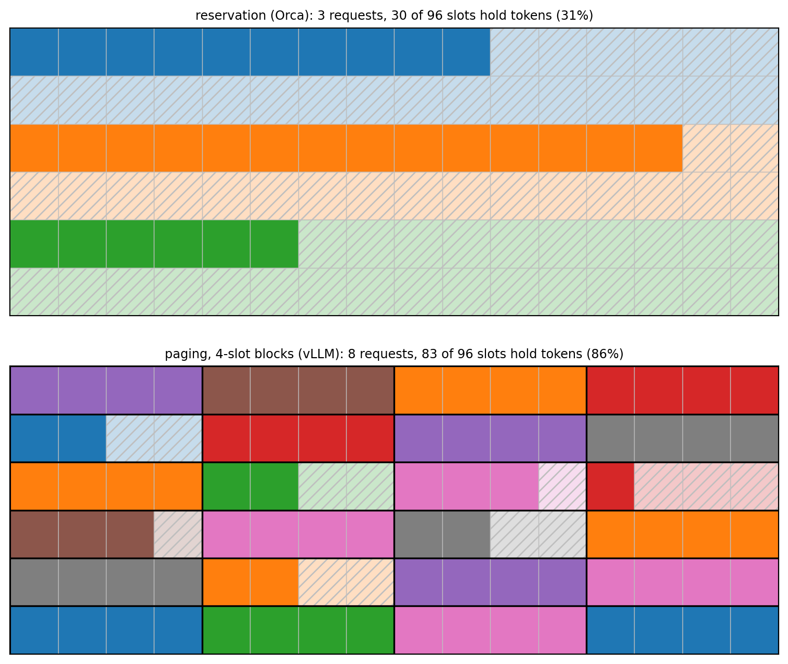
253.10 The Modern Engine Loop
Putting the pieces together, one iteration of a modern engine (vLLM’s V1 engine, SGLang, TensorRT-LLM’s executor) looks like this:
- Admit and schedule. Pull arrivals from the waiting queue in policy order (FCFS by default; SGLang can order by longest prefix match). For each candidate, check the KV block pool and a per-step token budget (
max_num_batched_tokens), which bounds how many prefill tokens and decode tokens one step may contain. Long prompts are chunked to fit the budget. If decoding sequences need new blocks and none are free, preempt the lowest-priority sequence by swapping its blocks to CPU memory or freeing them for later recomputation. - Build the batch. Flatten all scheduled tokens (decode tokens and prefill chunks) into one tensor, Orca style, with per-sequence offsets and block tables for the attention kernel.
- Forward pass. Run the model once, ideally as a captured CUDA graph, reading weights once for all tokens and each sequence’s cache blocks for attention.
- Sample. Apply each sequence’s own sampling parameters (temperature, top-k, top-p, penalties, seed) to its last-position logits, in one batched kernel.
- Hand out tokens. Append each token to its sequence, detokenize incrementally, and stream it to the client. Check stop conditions; finished sequences free their blocks (or donate them to the prefix cache) and leave the batch.
- Repeat, overlapping the CPU work of the next step with the GPU work of this one.
flowchart TB
W["Waiting queue"] --> S["Scheduler: token budget, KV blocks, priority"]
RUN["Running sequences"] --> S
S -- "preempt if out of blocks" --> W
S --> BT["Flat token batch plus block tables"]
BT --> FW["One forward pass, CUDA graph"]
FW --> SM["Batched sampler, per-request params"]
SM --> OUT["Stream tokens to clients"]
SM --> CHK{"Finished?"}
CHK -- "yes, free or cache blocks" --> POOL["KV block pool and prefix cache"]
CHK -- "no" --> RUN
POOL --> S
Every decision in that loop is one we have now derived: the token budget trades prefill latency against decode stalls (the prefill interference wall), the block pool is the KV capacity wall made operational, the batch size is chosen on the step-time curve of Figure 253.8, and the iteration-level loop itself is Orca’s.
253.11 Production Engines
All the major open-source engines implement iteration-level scheduling with paged KV caches; they differ in kernels, cache reuse, and operating model. The code in this section needs a Linux machine with a data center GPU and is shown, not executed.
| Engine | Batching | KV cache | Distinctive features | Key knobs |
|---|---|---|---|---|
| vLLM | continuous, chunked prefill | PagedAttention, automatic prefix caching | broad model support, OpenAI-compatible server, speculative decoding | max_num_seqs, max_num_batched_tokens, gpu_memory_utilization |
| SGLang | continuous, chunked prefill | paged, RadixAttention prefix tree | prefix-aware scheduling, structured generation, fast constrained decoding | --max-running-requests, --chunked-prefill-size, --mem-fraction-static, --schedule-policy |
| TensorRT-LLM | in-flight batching | paged | compiled engines and fused kernels for NVIDIA GPUs, FP8 and FP4 | max_batch_size, max_num_tokens, KV free memory fraction |
| Text Generation Inference | continuous | paged | Hugging Face integration, simple container deployment | --max-concurrent-requests, --max-batch-total-tokens, --waiting-served-ratio |
| llama.cpp server | continuous across parallel slots | per-slot, quantized cache options | CPU and consumer GPU, GGUF quantized models | -np (slots), -c (total context), -cb |
| Triton Inference Server | dynamic (request-level) | none for generic models | multi-framework model server; hosts TensorRT-LLM for LLMs | max_batch_size, max_queue_delay_microseconds |
253.11.1 vLLM
# requires a Linux GPU machine: pip install vllm
from vllm import LLM, SamplingParams
llm = LLM(
model="meta-llama/Llama-3.1-8B-Instruct",
gpu_memory_utilization=0.90, # u in the HBM budget: weights + activations + KV pool
max_num_seqs=256, # cap on concurrent sequences (the SLO wall, by hand)
max_num_batched_tokens=8192, # per-step token budget: bounds prefill chunks
enable_prefix_caching=True, # reuse KV blocks of shared prefixes
max_model_len=8192,
)
params = [SamplingParams(temperature=0.0, max_tokens=128), # greedy
SamplingParams(temperature=0.7, top_p=0.9, max_tokens=128, seed=1)]
outs = llm.generate(["Explain continuous batching.", "Explain the roofline model."], params)
for o in outs:
print(o.outputs[0].text)The same engine as an OpenAI-compatible server:
vllm serve meta-llama/Llama-3.1-8B-Instruct --gpu-memory-utilization 0.9 --max-num-seqs 256 --max-num-batched-tokens 8192253.11.2 SGLang
python -m sglang.launch_server --model-path meta-llama/Llama-3.1-8B-Instruct --mem-fraction-static 0.85 --max-running-requests 256 --chunked-prefill-size 8192 --schedule-policy lpmThe lpm (longest prefix match) policy orders the waiting queue to maximize RadixAttention cache hits, a scheduling choice that trades strict FCFS fairness for less recomputation.
253.11.3 TensorRT-LLM
trtllm-serve meta-llama/Llama-3.1-8B-Instruct --max_batch_size 256 --max_num_tokens 8192 --kv_cache_free_gpu_memory_fraction 0.9253.11.4 Triton dynamic batching for a fixed-shape model
For an image classifier, request-level dynamic batching is the right tool; the model configuration sets the two knobs from Section 253.8:
max_batch_size: 32
dynamic_batching {
preferred_batch_size: [ 8, 16, 32 ]
max_queue_delay_microseconds: 2000
}253.11.5 Measuring TTFT and TPOT against any OpenAI-compatible engine
Benchmark the engine you deploy, under your traffic. This client streams one request and reports the two latencies the chapter has used throughout; run many in parallel with an arrival process to trace the load curves of Figure 253.14.
# requires a running engine (vLLM, SGLang, TGI, TensorRT-LLM, llama.cpp all expose this API)
import time
from openai import OpenAI
client = OpenAI(base_url="http://localhost:8000/v1", api_key="not-needed")
t0 = time.perf_counter()
stamps = []
stream = client.chat.completions.create(
model="meta-llama/Llama-3.1-8B-Instruct",
messages=[{"role": "user", "content": "Describe the KV cache in three sentences."}],
max_tokens=200, temperature=0.0, stream=True,
)
for chunk in stream:
if chunk.choices and chunk.choices[0].delta.content:
stamps.append(time.perf_counter())
ttft = stamps[0] - t0
tpot = (stamps[-1] - stamps[0]) / max(len(stamps) - 1, 1)
print(f"TTFT {1e3 * ttft:.0f} ms, TPOT {1e3 * tpot:.1f} ms ({1 / tpot:.0f} tok/s per user)")253.12 The Core Model in Julia and Rust
The step-time model and the static versus continuous slot simulation are small enough to carry across languages. The three versions below compute the same quantities on the same trace; the Python tab runs in this build, and the Julia and Rust tabs were run locally and print identical numbers.
def step_ms(Bv, S, N=8.03e9, L=32, nkv=8, dh=128, d=4096, b=2, pi=989e12, beta=3.35e12):
kappa = 2 * L * nkv * dh * b
t_mem = (b * N + Bv * S * kappa) / (0.8 * beta)
t_cmp = Bv * (2 * N + 4 * L * d * S) / (0.6 * pi)
return 1e3 * (max(t_mem, t_cmp) + 1e-3 + 5e-6 * Bv)
for Bv in [1, 16, 64, 256]:
t = step_ms(Bv, 2048)
print(f"B={Bv:3d} step={t:7.2f} ms aggregate={1e3 * Bv / t:8.0f} tok/s")
for name, sim in [("static", simulate_static), ("continuous", simulate_continuous)]:
grid, finish, steps = sim(TRACE, SLOTS)
useful = sum(g for _, g in TRACE)
print(f"{name}: steps={steps} utilization={useful / (steps * SLOTS):.3f}")B= 1 step= 7.10 ms aggregate= 141 tok/s
B= 16 step= 8.68 ms aggregate= 1844 tok/s
B= 64 step= 13.72 ms aggregate= 4664 tok/s
B=256 step= 33.91 ms aggregate= 7548 tok/s
static: steps=23 utilization=0.500
continuous: steps=14 utilization=0.821function step_ms(B, S; N=8.03e9, L=32, nkv=8, dh=128, d=4096, b=2, pi=989e12, beta=3.35e12)
kappa = 2 * L * nkv * dh * b
t_mem = (b * N + B * S * kappa) / (0.8 * beta)
t_cmp = B * (2 * N + 4 * L * d * S) / (0.6 * pi)
return 1e3 * (max(t_mem, t_cmp) + 1e-3 + 5e-6 * B)
end
const TRACE = [(0, 12), (0, 3), (1, 7), (2, 2), (3, 9), (4, 4), (5, 6), (6, 3)]
const SLOTS = 4
function static_steps(trace, slots)
t, i = 0, 1
while i <= length(trace)
batch = i:min(i + slots - 1, length(trace))
t = max(t, trace[last(batch)][1]) # wait for the batch to fill
t += maximum(trace[r][2] for r in batch) # run until the longest finishes
i += slots
end
return t
end
function continuous_steps(trace, slots)
t, nxt = 0, 1
active = fill(0, slots) # 0 = empty slot
remaining = [g for (_, g) in trace]
finished = 0
while finished < length(trace)
for s in 1:slots
if active[s] == 0 && nxt <= length(trace) && trace[nxt][1] <= t
active[s] = nxt; nxt += 1
end
end
for s in 1:slots
r = active[s]
if r != 0
remaining[r] -= 1
if remaining[r] == 0
finished += 1; active[s] = 0
end
end
end
t += 1
end
return t
end
for B in (1, 16, 64, 256)
t = step_ms(B, 2048)
println("B=$(lpad(B, 3)) step=$(round(t, digits=2)) ms aggregate=$(round(Int, 1e3 * B / t)) tok/s")
end
useful = sum(g for (_, g) in TRACE)
for (name, f) in (("static", static_steps), ("continuous", continuous_steps))
s = f(TRACE, SLOTS)
println("$name: steps=$s utilization=$(round(useful / (s * SLOTS), digits=3))")
endfn step_ms(b_users: f64, s: f64) -> f64 {
let (n, l, nkv, dh, d, b) = (8.03e9, 32.0, 8.0, 128.0, 4096.0, 2.0);
let (pi, beta) = (989e12, 3.35e12);
let kappa = 2.0 * l * nkv * dh * b;
let t_mem = (b * n + b_users * s * kappa) / (0.8 * beta);
let t_cmp = b_users * (2.0 * n + 4.0 * l * d * s) / (0.6 * pi);
1e3 * (t_mem.max(t_cmp) + 1e-3 + 5e-6 * b_users)
}
const TRACE: [(u32, u32); 8] = [(0, 12), (0, 3), (1, 7), (2, 2), (3, 9), (4, 4), (5, 6), (6, 3)];
const SLOTS: usize = 4;
fn static_steps(trace: &[(u32, u32)], slots: usize) -> u32 {
let mut t = 0;
for batch in trace.chunks(slots) {
t = t.max(batch.last().unwrap().0); // wait for the batch to fill
t += batch.iter().map(|&(_, g)| g).max().unwrap(); // run until the longest finishes
}
t
}
fn continuous_steps(trace: &[(u32, u32)], slots: usize) -> u32 {
let (mut t, mut nxt, mut finished) = (0u32, 0usize, 0usize);
let mut active: Vec<Option<usize>> = vec![None; slots];
let mut remaining: Vec<u32> = trace.iter().map(|&(_, g)| g).collect();
while finished < trace.len() {
for slot in active.iter_mut() {
if slot.is_none() && nxt < trace.len() && trace[nxt].0 <= t {
*slot = Some(nxt);
nxt += 1;
}
}
for slot in active.iter_mut() {
if let Some(r) = *slot {
remaining[r] -= 1;
if remaining[r] == 0 {
finished += 1;
*slot = None;
}
}
}
t += 1;
}
t
}
fn main() {
for b in [1.0, 16.0, 64.0, 256.0] {
let t = step_ms(b, 2048.0);
println!("B={:3} step={:7.2} ms aggregate={:8.0} tok/s", b as u32, t, 1e3 * b / t);
}
let useful: u32 = TRACE.iter().map(|&(_, g)| g).sum();
for (name, f) in [("static", static_steps as fn(&[(u32, u32)], usize) -> u32), ("continuous", continuous_steps)] {
let s = f(&TRACE, SLOTS);
println!("{}: steps={} utilization={:.3}", name, s, useful as f64 / (s as f64 * SLOTS as f64));
}
}253.13 Pitfalls and When to Use What
Do not size a deployment from FLOP/s. Decode is memory bound; per-user speed is set by bandwidth and bytes per step, and capacity by the KV pool. Start every plan with Equation 253.2 and Equation 253.7, not with the tensor-core peak.
Throughput and latency are one curve, not two numbers. A benchmark that reports tokens per second without the concurrency and the TPOT at which it was measured is meaningless. Report the load curve, as in Figure 253.14, and pick the operating point from your latency objective.
Context length is the hidden multiplier. The same model and GPU that serve two hundred 2K-token chats serve a handful of 128K-token sessions. Agentic and retrieval workloads with long prompts move the binding wall from compute or SLO to KV capacity and KV bandwidth.
Static and dynamic batching are fine for fixed-shape models, wrong for generation. Use request-level dynamic batching (Triton) for classifiers and embedding models, where every request is one forward pass. For anything autoregressive, use an engine with iteration-level scheduling.
Prefill can wreck everyone’s latency. Without chunked prefill a single long prompt stalls every decoding user for the length of its prefill. Set a per-step token budget, and consider prefill-decode disaggregation when TTFT and TPOT objectives conflict.
Greedy is not automatically reproducible in a batched engine. Batch composition changes reduction order and therefore low-order bits, which can flip an argmax. If you need bit-exact replays for evaluation or auditing, fix the batch (run offline, alone) or use batch-invariant kernels, and accept the throughput cost.
Preemption is a real cost. When the block pool runs out, an engine swaps or recomputes a sequence’s cache. Frequent preemption shows up as latency spikes and wasted compute; it means the configured concurrency exceeds what memory supports, and lowering the maximum number of sequences often raises goodput.
Measure overhead before buying hardware. As the measurement in Section 253.6 showed, a naive serving path can be CPU bound. CUDA graphs, asynchronous scheduling, and a compiled engine often deliver more than a faster GPU would.
253.14 References
- Williams, S., Waterman, A., and Patterson, D. “Roofline: An Insightful Visual Performance Model for Multicore Architectures.” Communications of the ACM 52(4), 65-76, 2009. https://doi.org/10.1145/1498765.1498785
- Yu, G.-I., Jeong, J. S., Kim, G.-W., Kim, S., and Chun, B.-G. “Orca: A Distributed Serving System for Transformer-Based Generative Models.” 16th USENIX Symposium on Operating Systems Design and Implementation (OSDI 22), 521-538, 2022. https://www.usenix.org/conference/osdi22/presentation/yu
- Kwon, W., Li, Z., Zhuang, S., Sheng, Y., Zheng, L., Yu, C. H., Gonzalez, J., Zhang, H., and Stoica, I. “Efficient Memory Management for Large Language Model Serving with PagedAttention.” Proceedings of the 29th Symposium on Operating Systems Principles (SOSP ’23), 611-626, 2023. https://doi.org/10.1145/3600006.3613165
- Agrawal, A., Kedia, N., Panwar, A., Mohan, J., Kwatra, N., Gulavani, B. S., Tumanov, A., and Ramjee, R. “Taming Throughput-Latency Tradeoff in LLM Inference with Sarathi-Serve.” 18th USENIX Symposium on Operating Systems Design and Implementation (OSDI 24), 117-134, 2024. https://doi.org/10.48550/arXiv.2403.02310
- Zhong, Y., Liu, S., Chen, J., Hu, J., Zhu, Y., Liu, X., Jin, X., and Zhang, H. “DistServe: Disaggregating Prefill and Decoding for Goodput-optimized Large Language Model Serving.” 18th USENIX Symposium on Operating Systems Design and Implementation (OSDI 24), 193-210, 2024. https://doi.org/10.48550/arXiv.2401.09670
- Zheng, L., Yin, L., Xie, Z., Sun, C., Huang, J., Yu, C. H., Cao, S., Kozyrakis, C., Stoica, I., Gonzalez, J. E., Barrett, C., and Sheng, Y. “SGLang: Efficient Execution of Structured Language Model Programs.” Advances in Neural Information Processing Systems 37, 2024. https://doi.org/10.48550/arXiv.2312.07104
- Crankshaw, D., Wang, X., Zhou, G., Franklin, M. J., Gonzalez, J. E., and Stoica, I. “Clipper: A Low-Latency Online Prediction Serving System.” 14th USENIX Symposium on Networked Systems Design and Implementation (NSDI 17), 613-627, 2017. https://www.usenix.org/conference/nsdi17/technical-sessions/presentation/crankshaw
- Pope, R., Douglas, S., Chowdhery, A., Devlin, J., Bradbury, J., Heek, J., Xiao, K., Agrawal, S., and Dean, J. “Efficiently Scaling Transformer Inference.” Proceedings of Machine Learning and Systems 5 (MLSys), 2023. https://doi.org/10.48550/arXiv.2211.05102
- Holtzman, A., Buys, J., Du, L., Forbes, M., and Choi, Y. “The Curious Case of Neural Text Degeneration.” International Conference on Learning Representations (ICLR), 2020. https://doi.org/10.48550/arXiv.1904.09751
- Fan, A., Lewis, M., and Dauphin, Y. “Hierarchical Neural Story Generation.” Proceedings of the 56th Annual Meeting of the Association for Computational Linguistics, 889-898, 2018. https://doi.org/10.18653/v1/P18-1082
- Ainslie, J., Lee-Thorp, J., de Jong, M., Zemlyanskiy, Y., Lebron, F., and Sanghai, S. “GQA: Training Generalized Multi-Query Transformer Models from Multi-Head Checkpoints.” Proceedings of the 2023 Conference on Empirical Methods in Natural Language Processing, 4895-4901, 2023. https://doi.org/10.18653/v1/2023.emnlp-main.298
- Shazeer, N. “Fast Transformer Decoding: One Write-Head is All You Need.” arXiv preprint, 2019. https://doi.org/10.48550/arXiv.1911.02150
- Dao, T., Fu, D. Y., Ermon, S., Rudra, A., and Re, C. “FlashAttention: Fast and Memory-Efficient Exact Attention with IO-Awareness.” Advances in Neural Information Processing Systems 35, 2022. https://doi.org/10.48550/arXiv.2205.14135